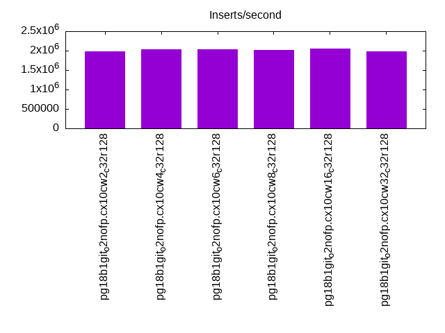
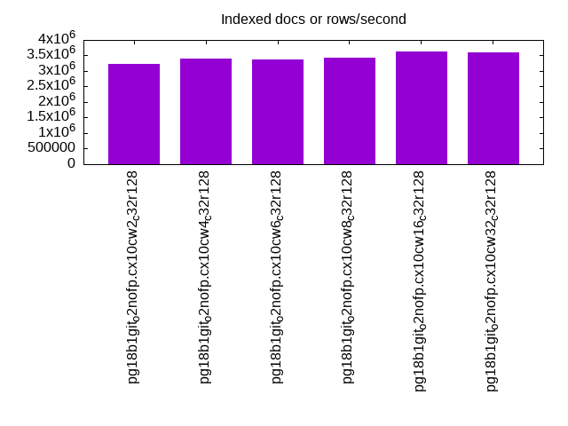
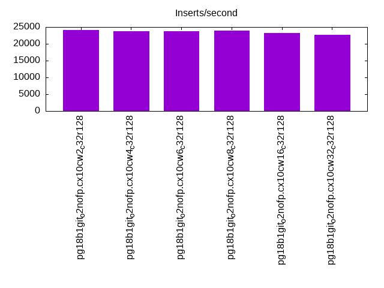
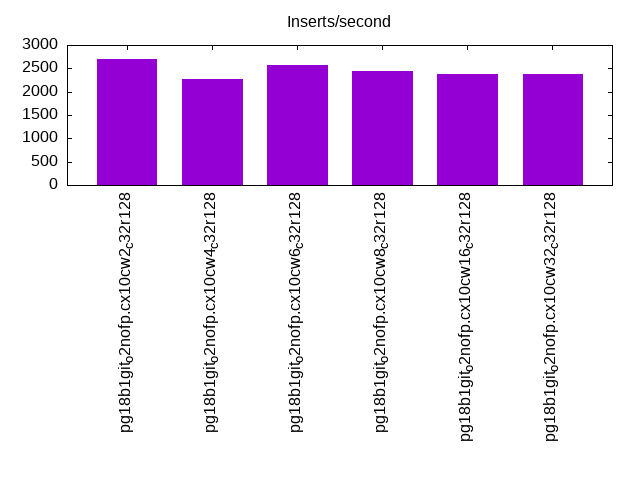
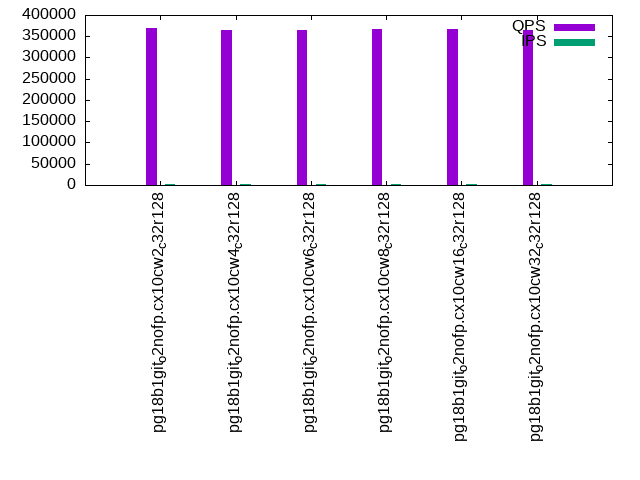
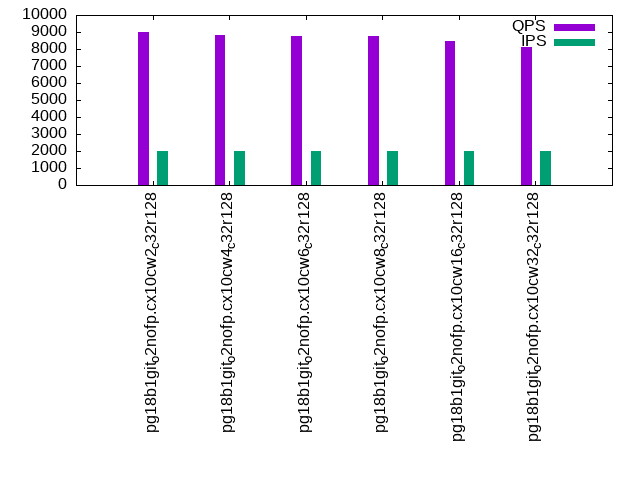
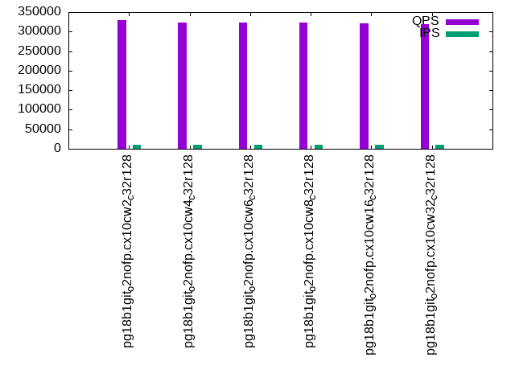
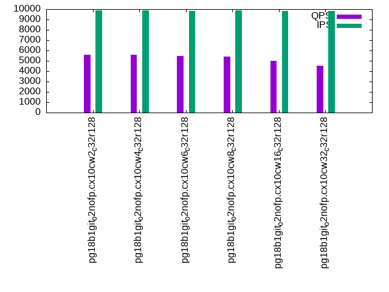
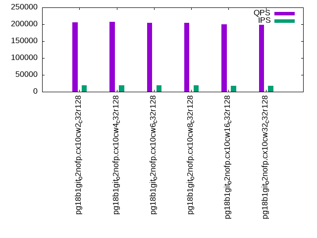
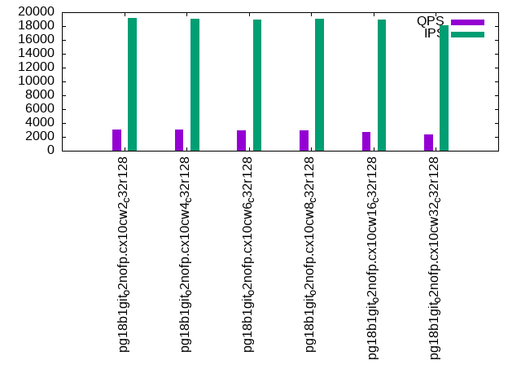

This is a report for the insert benchmark with 4000M docs and 20 client(s). It is generated by scripts (bash, awk, sed) and Tufte might not be impressed. An overview of the insert benchmark is here and a short update is here. Below, by DBMS, I mean DBMS+version.config. An example is my8020.c10b40 where my means MySQL, 8020 is version 8.0.20 and c10b40 is the name for the configuration file.
The test server has 48 AMD cores, 128G RAM and RAID 10 with 2 NVMe devices. It is described here. The benchmark was run with 20 clients and there were 1 or 3 connections per client (1 for queries or inserts without rate limits, 1+1 for rate limited inserts+deletes). It uses 20 tables with a table per client. It loads 200M rows per table without secondary indexes, creates 3 secondary indexes per table, then inserts 4m+1m rows per table with a delete per insert to avoid growing the table. It then does 6 read+write tests for 1800s each that do queries as fast as possible with 100,100,500,500,1000,1000 inserts/s and the same for deletes/s per client concurrent with the queries. The database is larger than memory. Clients and the DBMS share one server. The per-database configs are in the per-database subdirectories here.
The tested DBMS are:
The numbers are inserts/s for l.i0, l.i1 and l.i2, indexed docs (or rows) /s for l.x and queries/s for qr100, qp100 thru qr1000, qp1000" The values are the average rate over the entire test for inserts (IPS) and queries (QPS). The range of values for IPS and QPS is split into 3 parts: bottom 25%, middle 50%, top 25%. Values in the bottom 25% have a red background, values in the top 25% have a green background and values in the middle have no color. A gray background is used for values that can be ignored because the DBMS did not sustain the target insert rate. Red backgrounds are not used when the minimum value is within 80% of the max value.
| dbms | l.i0 | l.x | l.i1 | l.i2 | qr100 | qp100 | qr500 | qp500 | qr1000 | qp1000 |
|---|---|---|---|---|---|---|---|---|---|---|
| pg18b1git_o2nofp.cx10cw2_c32r128 | 1983143 | 3225806 | 24184 | 2697 | 369931 | 9001 | 329729 | 5608 | 205202 | 3114 |
| pg18b1git_o2nofp.cx10cw4_c32r128 | 2041858 | 3407155 | 23704 | 2263 | 365876 | 8818 | 322634 | 5587 | 206986 | 3079 |
| pg18b1git_o2nofp.cx10cw6_c32r128 | 2037697 | 3372681 | 23824 | 2569 | 365755 | 8794 | 322853 | 5482 | 204611 | 2944 |
| pg18b1git_o2nofp.cx10cw8_c32r128 | 2019182 | 3439381 | 23859 | 2433 | 367619 | 8772 | 324101 | 5431 | 204173 | 2901 |
| pg18b1git_o2nofp.cx10cw16_c32r128 | 2054443 | 3626473 | 23128 | 2372 | 366520 | 8456 | 320333 | 5002 | 200698 | 2666 |
| pg18b1git_o2nofp.cx10cw32_c32r128 | 1986097 | 3593890 | 22766 | 2385 | 364525 | 8115 | 319975 | 4545 | 198266 | 2354 |
This table has relative throughput, throughput for the DBMS relative to the DBMS in the first line, using the absolute throughput from the previous table. Values less than 0.95 have a yellow background. Values greater than 1.05 have a blue background.
| dbms | l.i0 | l.x | l.i1 | l.i2 | qr100 | qp100 | qr500 | qp500 | qr1000 | qp1000 |
|---|---|---|---|---|---|---|---|---|---|---|
| pg18b1git_o2nofp.cx10cw2_c32r128 | 1.00 | 1.00 | 1.00 | 1.00 | 1.00 | 1.00 | 1.00 | 1.00 | 1.00 | 1.00 |
| pg18b1git_o2nofp.cx10cw4_c32r128 | 1.03 | 1.06 | 0.98 | 0.84 | 0.99 | 0.98 | 0.98 | 1.00 | 1.01 | 0.99 |
| pg18b1git_o2nofp.cx10cw6_c32r128 | 1.03 | 1.05 | 0.99 | 0.95 | 0.99 | 0.98 | 0.98 | 0.98 | 1.00 | 0.95 |
| pg18b1git_o2nofp.cx10cw8_c32r128 | 1.02 | 1.07 | 0.99 | 0.90 | 0.99 | 0.97 | 0.98 | 0.97 | 0.99 | 0.93 |
| pg18b1git_o2nofp.cx10cw16_c32r128 | 1.04 | 1.12 | 0.96 | 0.88 | 0.99 | 0.94 | 0.97 | 0.89 | 0.98 | 0.86 |
| pg18b1git_o2nofp.cx10cw32_c32r128 | 1.00 | 1.11 | 0.94 | 0.88 | 0.99 | 0.90 | 0.97 | 0.81 | 0.97 | 0.76 |
This lists the average rate of inserts/s for the tests that do inserts concurrent with queries. For such tests the query rate is listed in the table above. The read+write tests are setup so that the insert rate should match the target rate every second. Cells that are not at least 95% of the target have a red background to indicate a failure to satisfy the target.
| dbms | qr100.L1 | qp100.L2 | qr500.L3 | qp500.L4 | qr1000.L5 | qp1000.L6 |
|---|---|---|---|---|---|---|
| pg18b1git_o2nofp.cx10cw2_c32r128 | 1977 | 1977 | 9868 | 9868 | 18595 | 19139 |
| pg18b1git_o2nofp.cx10cw4_c32r128 | 1977 | 1976 | 9868 | 9879 | 18692 | 19048 |
| pg18b1git_o2nofp.cx10cw6_c32r128 | 1977 | 1977 | 9868 | 9852 | 18614 | 18977 |
| pg18b1git_o2nofp.cx10cw8_c32r128 | 1976 | 1976 | 9868 | 9858 | 18480 | 19027 |
| pg18b1git_o2nofp.cx10cw16_c32r128 | 1977 | 1977 | 9858 | 9836 | 18163 | 18967 |
| pg18b1git_o2nofp.cx10cw32_c32r128 | 1977 | 1976 | 9858 | 9815 | 18036 | 18072 |
| target | 2000 | 2000 | 10000 | 10000 | 20000 | 20000 |
l.i0: load without secondary indexes. Graphs for performance per 1-second interval are here.
Average throughput:
Insert response time histogram: each cell has the percentage of responses that take <= the time in the header and max is the max response time in seconds. For the max column values in the top 25% of the range have a red background and in the bottom 25% of the range have a green background. The red background is not used when the min value is within 80% of the max value.
| dbms | 256us | 1ms | 4ms | 16ms | 64ms | 256ms | 1s | 4s | 16s | gt | max |
|---|---|---|---|---|---|---|---|---|---|---|---|
| pg18b1git_o2nofp.cx10cw2_c32r128 | 88.965 | 10.278 | 0.656 | 0.088 | 0.008 | 0.006 | nonzero | 1.575 | |||
| pg18b1git_o2nofp.cx10cw4_c32r128 | 90.358 | 9.210 | 0.324 | 0.096 | 0.005 | 0.006 | nonzero | 1.365 | |||
| pg18b1git_o2nofp.cx10cw6_c32r128 | 90.316 | 9.254 | 0.331 | 0.087 | 0.005 | 0.006 | nonzero | 2.298 | |||
| pg18b1git_o2nofp.cx10cw8_c32r128 | 90.185 | 9.244 | 0.462 | 0.095 | 0.007 | 0.007 | 0.978 | ||||
| pg18b1git_o2nofp.cx10cw16_c32r128 | 91.026 | 8.590 | 0.288 | 0.084 | 0.006 | 0.006 | nonzero | 1.405 | |||
| pg18b1git_o2nofp.cx10cw32_c32r128 | 89.882 | 9.482 | 0.528 | 0.094 | 0.006 | 0.007 | nonzero | 1.302 |
Performance metrics for the DBMS listed above. Some are normalized by throughput, others are not. Legend for results is here.
ips qps rps rmbps wps wmbps rpq rkbpq wpi wkbpi csps cpups cspq cpupq dbgb1 dbgb2 rss maxop p50 p99 tag 1983143 0 1702 13.6 8304.3 793.1 0.001 0.007 0.004 0.410 324892 55.0 0.164 13 382.7 478.8 91.5 1.575 108525 36260 pg18b1git_o2nofp.cx10cw2_c32r128 2041858 0 1678 13.5 8552.2 812.7 0.001 0.007 0.004 0.408 344523 56.7 0.169 13 382.7 478.8 93.6 1.365 110576 36860 pg18b1git_o2nofp.cx10cw4_c32r128 2037697 0 1755 14.1 8607.2 817.6 0.001 0.007 0.004 0.411 354470 56.8 0.174 13 382.7 478.8 92.5 2.298 111081 31965 pg18b1git_o2nofp.cx10cw6_c32r128 2019182 0 1745 14.0 8475.2 806.6 0.001 0.007 0.004 0.409 332152 55.9 0.164 13 382.7 478.8 91.2 0.978 110916 32365 pg18b1git_o2nofp.cx10cw8_c32r128 2054443 0 1717 13.8 8625.0 821.3 0.001 0.007 0.004 0.409 342544 57.4 0.167 13 382.7 478.8 93.2 1.405 111380 35395 pg18b1git_o2nofp.cx10cw16_c32r128 1986097 0 1719 13.8 8349.5 797.9 0.001 0.007 0.004 0.411 314516 55.5 0.158 13 382.7 478.8 90.8 1.302 108983 31666 pg18b1git_o2nofp.cx10cw32_c32r128
l.x: create secondary indexes.
Average throughput:
Performance metrics for the DBMS listed above. Some are normalized by throughput, others are not. Legend for results is here.
ips qps rps rmbps wps wmbps rpq rkbpq wpi wkbpi csps cpups cspq cpupq dbgb1 dbgb2 rss maxop p50 p99 tag 3225806 0 10846 1025.2 8328.2 919.7 0.003 0.325 0.003 0.292 89540 23.2 0.028 3 768.4 863.7 41.9 0.021 NA NA pg18b1git_o2nofp.cx10cw2_c32r128 3407155 0 11443 1082.0 8729.2 975.8 0.003 0.325 0.003 0.293 94770 23.7 0.028 3 768.4 863.7 46.5 0.114 NA NA pg18b1git_o2nofp.cx10cw4_c32r128 3372681 0 11295 1072.9 8644.0 962.6 0.003 0.326 0.003 0.292 96210 23.9 0.029 3 768.4 863.7 48.9 0.080 NA NA pg18b1git_o2nofp.cx10cw6_c32r128 3439381 0 11554 1095.7 8822.0 981.8 0.003 0.326 0.003 0.292 99132 24.8 0.029 3 768.4 863.7 59.7 0.037 NA NA pg18b1git_o2nofp.cx10cw8_c32r128 3626473 0 12097 1150.6 9167.0 1034.4 0.003 0.325 0.003 0.292 108480 26.5 0.030 4 768.4 863.7 53.1 0.284 NA NA pg18b1git_o2nofp.cx10cw16_c32r128 3593890 0 11942 1145.1 9197.0 1029.7 0.003 0.326 0.003 0.293 117007 27.2 0.033 4 768.4 863.7 55.1 0.249 NA NA pg18b1git_o2nofp.cx10cw32_c32r128
l.i1: continue load after secondary indexes created with 50 inserts per transaction. Graphs for performance per 1-second interval are here.
Average throughput:
Insert response time histogram: each cell has the percentage of responses that take <= the time in the header and max is the max response time in seconds. For the max column values in the top 25% of the range have a red background and in the bottom 25% of the range have a green background. The red background is not used when the min value is within 80% of the max value.
| dbms | 256us | 1ms | 4ms | 16ms | 64ms | 256ms | 1s | 4s | 16s | gt | max |
|---|---|---|---|---|---|---|---|---|---|---|---|
| pg18b1git_o2nofp.cx10cw2_c32r128 | 15.513 | 73.455 | 10.821 | 0.087 | 0.123 | 3.790 | |||||
| pg18b1git_o2nofp.cx10cw4_c32r128 | 17.045 | 72.482 | 10.279 | 0.077 | 0.117 | 3.797 | |||||
| pg18b1git_o2nofp.cx10cw6_c32r128 | 15.895 | 73.265 | 10.666 | 0.064 | 0.109 | 3.416 | |||||
| pg18b1git_o2nofp.cx10cw8_c32r128 | 15.387 | 73.539 | 10.888 | 0.064 | 0.122 | nonzero | 4.509 | ||||
| pg18b1git_o2nofp.cx10cw16_c32r128 | 15.735 | 71.544 | 12.533 | 0.064 | 0.125 | 3.323 | |||||
| pg18b1git_o2nofp.cx10cw32_c32r128 | 13.313 | 70.912 | 15.562 | 0.101 | 0.111 | 0.001 | 5.672 |
Delete response time histogram: each cell has the percentage of responses that take <= the time in the header and max is the max response time in seconds. For the max column values in the top 25% of the range have a red background and in the bottom 25% of the range have a green background. The red background is not used when the min value is within 80% of the max value.
| dbms | 256us | 1ms | 4ms | 16ms | 64ms | 256ms | 1s | 4s | 16s | gt | max |
|---|---|---|---|---|---|---|---|---|---|---|---|
| pg18b1git_o2nofp.cx10cw2_c32r128 | 2.368 | 9.271 | 24.109 | 63.138 | 1.014 | 0.032 | 0.068 | 3.465 | |||
| pg18b1git_o2nofp.cx10cw4_c32r128 | 2.435 | 8.627 | 24.347 | 62.836 | 1.659 | 0.034 | 0.062 | 2.752 | |||
| pg18b1git_o2nofp.cx10cw6_c32r128 | 2.453 | 8.527 | 24.078 | 63.185 | 1.657 | 0.027 | 0.073 | 2.628 | |||
| pg18b1git_o2nofp.cx10cw8_c32r128 | 2.487 | 8.172 | 25.636 | 62.478 | 1.126 | 0.028 | 0.073 | 2.579 | |||
| pg18b1git_o2nofp.cx10cw16_c32r128 | 2.446 | 9.037 | 22.090 | 63.874 | 2.443 | 0.031 | 0.078 | 2.206 | |||
| pg18b1git_o2nofp.cx10cw32_c32r128 | 2.364 | 8.048 | 25.909 | 61.843 | 1.730 | 0.052 | 0.054 | 2.705 |
Performance metrics for the DBMS listed above. Some are normalized by throughput, others are not. Legend for results is here.
ips qps rps rmbps wps wmbps rpq rkbpq wpi wkbpi csps cpups cspq cpupq dbgb1 dbgb2 rss maxop p50 p99 tag 24184 0 30502 242.8 35848.0 787.0 1.261 10.281 1.482 33.325 86671 29.8 3.584 591 781.5 921.4 81.8 3.790 1199 0 pg18b1git_o2nofp.cx10cw2_c32r128 23704 0 30066 240.6 35205.8 779.3 1.268 10.395 1.485 33.664 84821 30.8 3.578 624 781.5 877.6 89.9 3.797 1199 0 pg18b1git_o2nofp.cx10cw4_c32r128 23824 0 30091 239.8 35061.5 775.0 1.263 10.307 1.472 33.313 85309 30.7 3.581 619 781.5 877.6 84.8 3.416 1199 0 pg18b1git_o2nofp.cx10cw6_c32r128 23859 0 30153 239.7 35597.7 778.7 1.264 10.288 1.492 33.420 85119 29.9 3.568 602 781.5 877.6 85.9 4.509 1199 0 pg18b1git_o2nofp.cx10cw8_c32r128 23128 0 29362 233.9 34293.7 753.2 1.270 10.354 1.483 33.349 83140 32.5 3.595 675 781.5 877.6 83.8 3.323 1149 0 pg18b1git_o2nofp.cx10cw16_c32r128 22766 0 28829 229.9 33560.5 746.0 1.266 10.341 1.474 33.553 81065 30.9 3.561 651 781.5 920.7 76.0 5.672 1100 0 pg18b1git_o2nofp.cx10cw32_c32r128
l.i2: continue load after secondary indexes created with 5 inserts per transaction. Graphs for performance per 1-second interval are here.
Average throughput:
Insert response time histogram: each cell has the percentage of responses that take <= the time in the header and max is the max response time in seconds. For the max column values in the top 25% of the range have a red background and in the bottom 25% of the range have a green background. The red background is not used when the min value is within 80% of the max value.
| dbms | 256us | 1ms | 4ms | 16ms | 64ms | 256ms | 1s | 4s | 16s | gt | max |
|---|---|---|---|---|---|---|---|---|---|---|---|
| pg18b1git_o2nofp.cx10cw2_c32r128 | 0.238 | 36.854 | 62.670 | 0.059 | 0.111 | 0.025 | 0.038 | 0.005 | 1.759 | ||
| pg18b1git_o2nofp.cx10cw4_c32r128 | 0.150 | 36.556 | 63.115 | 0.069 | 0.091 | 0.010 | 0.007 | 0.002 | 3.944 | ||
| pg18b1git_o2nofp.cx10cw6_c32r128 | 0.068 | 36.274 | 63.454 | 0.038 | 0.102 | 0.023 | 0.034 | 0.007 | nonzero | 4.397 | |
| pg18b1git_o2nofp.cx10cw8_c32r128 | 0.031 | 37.047 | 62.609 | 0.108 | 0.139 | 0.024 | 0.035 | 0.007 | nonzero | 4.046 | |
| pg18b1git_o2nofp.cx10cw16_c32r128 | 0.014 | 39.341 | 60.520 | 0.029 | 0.036 | 0.016 | 0.029 | 0.013 | nonzero | 4.536 | |
| pg18b1git_o2nofp.cx10cw32_c32r128 | nonzero | 33.425 | 66.181 | 0.095 | 0.099 | 0.038 | 0.091 | 0.071 | 3.492 |
Delete response time histogram: each cell has the percentage of responses that take <= the time in the header and max is the max response time in seconds. For the max column values in the top 25% of the range have a red background and in the bottom 25% of the range have a green background. The red background is not used when the min value is within 80% of the max value.
| dbms | 256us | 1ms | 4ms | 16ms | 64ms | 256ms | 1s | 4s | 16s | gt | max |
|---|---|---|---|---|---|---|---|---|---|---|---|
| pg18b1git_o2nofp.cx10cw2_c32r128 | 0.094 | 2.385 | 3.286 | 0.060 | 94.171 | 0.002 | 0.001 | nonzero | 1.232 | ||
| pg18b1git_o2nofp.cx10cw4_c32r128 | 0.104 | 2.314 | 4.971 | 0.190 | 92.417 | 0.003 | nonzero | nonzero | 1.394 | ||
| pg18b1git_o2nofp.cx10cw6_c32r128 | 0.049 | 1.555 | 2.080 | 0.579 | 95.735 | 0.001 | 0.001 | nonzero | 1.097 | ||
| pg18b1git_o2nofp.cx10cw8_c32r128 | 0.196 | 2.121 | 1.599 | 0.047 | 96.033 | 0.003 | 0.002 | nonzero | 1.663 | ||
| pg18b1git_o2nofp.cx10cw16_c32r128 | 0.241 | 1.271 | 0.002 | 0.020 | 98.464 | 0.002 | nonzero | nonzero | 2.111 | ||
| pg18b1git_o2nofp.cx10cw32_c32r128 | 0.338 | 99.659 | 0.001 | 0.002 | 0.001 | 2.740 |
Performance metrics for the DBMS listed above. Some are normalized by throughput, others are not. Legend for results is here.
ips qps rps rmbps wps wmbps rpq rkbpq wpi wkbpi csps cpups cspq cpupq dbgb1 dbgb2 rss maxop p50 p99 tag 2697 0 3468 33.8 5374.1 83.6 1.286 12.836 1.992 31.725 20871 29.7 7.738 5285 784.8 880.8 79.0 1.759 215 155 pg18b1git_o2nofp.cx10cw2_c32r128 2263 0 2867 26.7 4056.9 66.0 1.267 12.070 1.792 29.860 17533 34.9 7.746 7401 784.7 880.7 89.9 3.944 215 190 pg18b1git_o2nofp.cx10cw4_c32r128 2569 0 3186 27.7 4966.0 79.0 1.240 11.054 1.933 31.496 19661 29.2 7.652 5455 784.8 880.8 77.2 4.397 215 145 pg18b1git_o2nofp.cx10cw6_c32r128 2433 0 3253 34.0 4901.9 80.1 1.337 14.313 2.015 33.698 19419 28.9 7.981 5702 784.8 880.9 81.9 4.046 215 135 pg18b1git_o2nofp.cx10cw8_c32r128 2372 0 3097 31.8 4688.1 76.3 1.306 13.724 1.977 32.959 18685 31.3 7.878 6334 784.9 880.9 72.8 4.536 210 110 pg18b1git_o2nofp.cx10cw16_c32r128 2385 0 2959 23.5 4865.8 72.8 1.241 10.074 2.040 31.258 18438 25.5 7.731 5132 784.9 880.9 75.5 3.492 215 0 pg18b1git_o2nofp.cx10cw32_c32r128
qr100.L1: range queries with 100 insert/s per client. Graphs for performance per 1-second interval are here.
Average throughput:
Query response time histogram: each cell has the percentage of responses that take <= the time in the header and max is the max response time in seconds. For max values in the top 25% of the range have a red background and in the bottom 25% of the range have a green background. The red background is not used when the min value is within 80% of the max value.
| dbms | 256us | 1ms | 4ms | 16ms | 64ms | 256ms | 1s | 4s | 16s | gt | max |
|---|---|---|---|---|---|---|---|---|---|---|---|
| pg18b1git_o2nofp.cx10cw2_c32r128 | 99.993 | 0.006 | 0.001 | nonzero | nonzero | nonzero | 0.190 | ||||
| pg18b1git_o2nofp.cx10cw4_c32r128 | 99.993 | 0.006 | 0.001 | nonzero | nonzero | nonzero | nonzero | 0.283 | |||
| pg18b1git_o2nofp.cx10cw6_c32r128 | 99.993 | 0.006 | 0.001 | nonzero | nonzero | nonzero | 0.218 | ||||
| pg18b1git_o2nofp.cx10cw8_c32r128 | 99.992 | 0.007 | 0.001 | nonzero | nonzero | nonzero | 0.228 | ||||
| pg18b1git_o2nofp.cx10cw16_c32r128 | 99.992 | 0.007 | 0.001 | nonzero | nonzero | 0.059 | |||||
| pg18b1git_o2nofp.cx10cw32_c32r128 | 99.993 | 0.006 | 0.001 | nonzero | nonzero | nonzero | nonzero | 0.477 |
Insert response time histogram: each cell has the percentage of responses that take <= the time in the header and max is the max response time in seconds. For max values in the top 25% of the range have a red background and in the bottom 25% of the range have a green background. The red background is not used when the min value is within 80% of the max value.
| dbms | 256us | 1ms | 4ms | 16ms | 64ms | 256ms | 1s | 4s | 16s | gt | max |
|---|---|---|---|---|---|---|---|---|---|---|---|
| pg18b1git_o2nofp.cx10cw2_c32r128 | 98.785 | 1.183 | 0.028 | 0.004 | 0.386 | ||||||
| pg18b1git_o2nofp.cx10cw4_c32r128 | 98.447 | 1.553 | 0.063 | ||||||||
| pg18b1git_o2nofp.cx10cw6_c32r128 | 98.728 | 1.265 | 0.007 | 0.180 | |||||||
| pg18b1git_o2nofp.cx10cw8_c32r128 | 97.747 | 2.242 | 0.010 | 0.001 | 0.500 | ||||||
| pg18b1git_o2nofp.cx10cw16_c32r128 | 96.056 | 3.913 | 0.032 | 0.199 | |||||||
| pg18b1git_o2nofp.cx10cw32_c32r128 | 99.303 | 0.657 | 0.035 | 0.006 | 0.388 |
Delete response time histogram: each cell has the percentage of responses that take <= the time in the header and max is the max response time in seconds. For max values in the top 25% of the range have a red background and in the bottom 25% of the range have a green background. The red background is not used when the min value is within 80% of the max value.
| dbms | 256us | 1ms | 4ms | 16ms | 64ms | 256ms | 1s | 4s | 16s | gt | max |
|---|---|---|---|---|---|---|---|---|---|---|---|
| pg18b1git_o2nofp.cx10cw2_c32r128 | 47.119 | 52.817 | 0.064 | 0.013 | |||||||
| pg18b1git_o2nofp.cx10cw4_c32r128 | 46.374 | 53.583 | 0.040 | 0.003 | 0.018 | ||||||
| pg18b1git_o2nofp.cx10cw6_c32r128 | 43.446 | 56.464 | 0.088 | 0.003 | 0.029 | ||||||
| pg18b1git_o2nofp.cx10cw8_c32r128 | 43.722 | 56.199 | 0.079 | 0.014 | |||||||
| pg18b1git_o2nofp.cx10cw16_c32r128 | 47.047 | 52.865 | 0.088 | 0.015 | |||||||
| pg18b1git_o2nofp.cx10cw32_c32r128 | 42.683 | 57.250 | 0.064 | 0.001 | 0.001 | 0.121 |
Performance metrics for the DBMS listed above. Some are normalized by throughput, others are not. Legend for results is here.
ips qps rps rmbps wps wmbps rpq rkbpq wpi wkbpi csps cpups cspq cpupq dbgb1 dbgb2 rss maxop p50 p99 tag 1977 369931 2670 21.4 1253.5 36.3 0.007 0.059 0.634 18.786 1407752 43.2 3.805 56 785.0 881.1 95.7 0.190 18844 16915 pg18b1git_o2nofp.cx10cw2_c32r128 1977 365876 2667 21.4 1270.4 36.4 0.007 0.060 0.643 18.859 1392140 43.0 3.805 56 784.8 880.8 96.2 0.283 18739 16926 pg18b1git_o2nofp.cx10cw4_c32r128 1977 365755 2671 21.5 1278.4 36.5 0.007 0.060 0.647 18.898 1391644 43.1 3.805 57 784.9 881.0 96.2 0.218 18540 16654 pg18b1git_o2nofp.cx10cw6_c32r128 1976 367619 2668 21.5 1341.9 37.1 0.007 0.060 0.679 19.212 1399263 43.0 3.806 56 784.9 881.0 95.6 0.228 18604 16942 pg18b1git_o2nofp.cx10cw8_c32r128 1977 366520 2670 21.5 1295.9 36.7 0.007 0.060 0.656 18.987 1394745 43.2 3.805 57 785.0 881.0 95.7 0.059 18684 16894 pg18b1git_o2nofp.cx10cw16_c32r128 1977 364525 2664 21.4 1288.7 36.6 0.007 0.060 0.652 18.939 1387749 43.2 3.807 57 785.0 881.0 96.2 0.477 18604 16862 pg18b1git_o2nofp.cx10cw32_c32r128
qp100.L2: point queries with 100 insert/s per client. Graphs for performance per 1-second interval are here.
Average throughput:
Query response time histogram: each cell has the percentage of responses that take <= the time in the header and max is the max response time in seconds. For max values in the top 25% of the range have a red background and in the bottom 25% of the range have a green background. The red background is not used when the min value is within 80% of the max value.
| dbms | 256us | 1ms | 4ms | 16ms | 64ms | 256ms | 1s | 4s | 16s | gt | max |
|---|---|---|---|---|---|---|---|---|---|---|---|
| pg18b1git_o2nofp.cx10cw2_c32r128 | 2.628 | 94.426 | 0.415 | 2.529 | 0.001 | 0.001 | 0.001 | 3.119 | |||
| pg18b1git_o2nofp.cx10cw4_c32r128 | nonzero | 2.431 | 94.503 | 0.445 | 2.617 | 0.003 | 0.001 | 0.002 | 2.444 | ||
| pg18b1git_o2nofp.cx10cw6_c32r128 | 2.465 | 94.444 | 0.429 | 2.658 | 0.002 | 0.001 | 0.001 | 3.376 | |||
| pg18b1git_o2nofp.cx10cw8_c32r128 | nonzero | 2.473 | 94.345 | 0.564 | 2.612 | 0.003 | 0.001 | 0.002 | 3.804 | ||
| pg18b1git_o2nofp.cx10cw16_c32r128 | nonzero | 2.264 | 94.229 | 0.630 | 2.872 | 0.002 | 0.001 | 0.001 | 2.954 | ||
| pg18b1git_o2nofp.cx10cw32_c32r128 | nonzero | 2.025 | 93.827 | 0.950 | 3.194 | 0.002 | 0.001 | 0.001 | 3.127 |
Insert response time histogram: each cell has the percentage of responses that take <= the time in the header and max is the max response time in seconds. For max values in the top 25% of the range have a red background and in the bottom 25% of the range have a green background. The red background is not used when the min value is within 80% of the max value.
| dbms | 256us | 1ms | 4ms | 16ms | 64ms | 256ms | 1s | 4s | 16s | gt | max |
|---|---|---|---|---|---|---|---|---|---|---|---|
| pg18b1git_o2nofp.cx10cw2_c32r128 | 64.172 | 35.421 | 0.163 | 0.160 | 0.085 | 3.045 | |||||
| pg18b1git_o2nofp.cx10cw4_c32r128 | 60.053 | 39.215 | 0.217 | 0.321 | 0.194 | 2.133 | |||||
| pg18b1git_o2nofp.cx10cw6_c32r128 | 61.103 | 38.388 | 0.157 | 0.233 | 0.119 | 2.600 | |||||
| pg18b1git_o2nofp.cx10cw8_c32r128 | 60.001 | 39.314 | 0.147 | 0.257 | 0.281 | 3.284 | |||||
| pg18b1git_o2nofp.cx10cw16_c32r128 | 52.644 | 46.772 | 0.225 | 0.219 | 0.139 | 2.953 | |||||
| pg18b1git_o2nofp.cx10cw32_c32r128 | 52.718 | 46.585 | 0.321 | 0.186 | 0.190 | 2.735 |
Delete response time histogram: each cell has the percentage of responses that take <= the time in the header and max is the max response time in seconds. For max values in the top 25% of the range have a red background and in the bottom 25% of the range have a green background. The red background is not used when the min value is within 80% of the max value.
| dbms | 256us | 1ms | 4ms | 16ms | 64ms | 256ms | 1s | 4s | 16s | gt | max |
|---|---|---|---|---|---|---|---|---|---|---|---|
| pg18b1git_o2nofp.cx10cw2_c32r128 | 94.907 | 1.811 | 3.257 | 0.015 | 0.003 | 0.007 | 2.023 | ||||
| pg18b1git_o2nofp.cx10cw4_c32r128 | 91.811 | 4.603 | 3.519 | 0.026 | 0.029 | 0.011 | 2.099 | ||||
| pg18b1git_o2nofp.cx10cw6_c32r128 | 92.222 | 4.304 | 3.432 | 0.001 | 0.035 | 0.006 | 2.562 | ||||
| pg18b1git_o2nofp.cx10cw8_c32r128 | 92.831 | 4.217 | 2.913 | 0.013 | 0.015 | 0.013 | 2.193 | ||||
| pg18b1git_o2nofp.cx10cw16_c32r128 | 93.869 | 2.785 | 3.257 | 0.021 | 0.064 | 0.004 | 1.832 | ||||
| pg18b1git_o2nofp.cx10cw32_c32r128 | 91.860 | 4.533 | 3.499 | 0.068 | 0.029 | 0.011 | 2.398 |
Performance metrics for the DBMS listed above. Some are normalized by throughput, others are not. Legend for results is here.
ips qps rps rmbps wps wmbps rpq rkbpq wpi wkbpi csps cpups cspq cpupq dbgb1 dbgb2 rss maxop p50 p99 tag 1977 9001 125482 984.6 6769.8 77.5 13.941 112.014 3.424 40.128 283580 24.2 31.507 1291 785.3 881.4 90.9 3.119 463 240 pg18b1git_o2nofp.cx10cw2_c32r128 1976 8818 123157 966.7 6739.6 77.8 13.966 112.251 3.411 40.345 279052 24.1 31.645 1312 784.9 880.9 91.1 2.444 463 112 pg18b1git_o2nofp.cx10cw4_c32r128 1977 8794 122736 962.8 6712.7 77.0 13.957 112.120 3.396 39.878 278133 24.3 31.629 1326 785.0 881.1 91.2 3.376 448 144 pg18b1git_o2nofp.cx10cw6_c32r128 1976 8772 122514 961.0 6679.1 76.6 13.966 112.179 3.380 39.704 277872 23.7 31.676 1297 785.0 881.1 90.9 3.804 463 32 pg18b1git_o2nofp.cx10cw8_c32r128 1977 8456 118278 927.3 6693.2 76.7 13.987 112.288 3.386 39.746 269340 24.7 31.852 1402 785.0 881.1 90.8 2.954 432 192 pg18b1git_o2nofp.cx10cw16_c32r128 1976 8115 113819 891.5 6711.2 76.8 14.026 112.501 3.397 39.792 261165 25.5 32.183 1508 785.1 881.1 90.5 3.127 416 176 pg18b1git_o2nofp.cx10cw32_c32r128
qr500.L3: range queries with 500 insert/s per client. Graphs for performance per 1-second interval are here.
Average throughput:
Query response time histogram: each cell has the percentage of responses that take <= the time in the header and max is the max response time in seconds. For max values in the top 25% of the range have a red background and in the bottom 25% of the range have a green background. The red background is not used when the min value is within 80% of the max value.
| dbms | 256us | 1ms | 4ms | 16ms | 64ms | 256ms | 1s | 4s | 16s | gt | max |
|---|---|---|---|---|---|---|---|---|---|---|---|
| pg18b1git_o2nofp.cx10cw2_c32r128 | 99.969 | 0.024 | 0.005 | 0.001 | 0.001 | nonzero | nonzero | nonzero | 1.978 | ||
| pg18b1git_o2nofp.cx10cw4_c32r128 | 99.957 | 0.034 | 0.006 | 0.002 | 0.001 | nonzero | nonzero | nonzero | 1.783 | ||
| pg18b1git_o2nofp.cx10cw6_c32r128 | 99.958 | 0.033 | 0.006 | 0.002 | 0.001 | nonzero | nonzero | nonzero | 2.308 | ||
| pg18b1git_o2nofp.cx10cw8_c32r128 | 99.960 | 0.032 | 0.006 | 0.002 | 0.001 | nonzero | nonzero | nonzero | 1.933 | ||
| pg18b1git_o2nofp.cx10cw16_c32r128 | 99.955 | 0.035 | 0.007 | 0.002 | 0.001 | nonzero | nonzero | nonzero | 1.568 | ||
| pg18b1git_o2nofp.cx10cw32_c32r128 | 99.958 | 0.032 | 0.007 | 0.002 | 0.001 | nonzero | nonzero | nonzero | 1.911 |
Insert response time histogram: each cell has the percentage of responses that take <= the time in the header and max is the max response time in seconds. For max values in the top 25% of the range have a red background and in the bottom 25% of the range have a green background. The red background is not used when the min value is within 80% of the max value.
| dbms | 256us | 1ms | 4ms | 16ms | 64ms | 256ms | 1s | 4s | 16s | gt | max |
|---|---|---|---|---|---|---|---|---|---|---|---|
| pg18b1git_o2nofp.cx10cw2_c32r128 | 87.235 | 11.881 | 0.359 | 0.473 | 0.052 | 3.386 | |||||
| pg18b1git_o2nofp.cx10cw4_c32r128 | 79.210 | 19.996 | 0.410 | 0.348 | 0.036 | 1.992 | |||||
| pg18b1git_o2nofp.cx10cw6_c32r128 | 80.510 | 18.661 | 0.379 | 0.376 | 0.074 | 2.565 | |||||
| pg18b1git_o2nofp.cx10cw8_c32r128 | 80.981 | 18.149 | 0.400 | 0.371 | 0.099 | 2.273 | |||||
| pg18b1git_o2nofp.cx10cw16_c32r128 | 75.111 | 24.156 | 0.390 | 0.288 | 0.055 | 2.754 | |||||
| pg18b1git_o2nofp.cx10cw32_c32r128 | 80.849 | 18.352 | 0.416 | 0.276 | 0.107 | 2.646 |
Delete response time histogram: each cell has the percentage of responses that take <= the time in the header and max is the max response time in seconds. For max values in the top 25% of the range have a red background and in the bottom 25% of the range have a green background. The red background is not used when the min value is within 80% of the max value.
| dbms | 256us | 1ms | 4ms | 16ms | 64ms | 256ms | 1s | 4s | 16s | gt | max |
|---|---|---|---|---|---|---|---|---|---|---|---|
| pg18b1git_o2nofp.cx10cw2_c32r128 | 40.582 | 58.581 | 0.821 | 0.007 | 0.008 | 0.001 | 1.726 | ||||
| pg18b1git_o2nofp.cx10cw4_c32r128 | 35.861 | 62.660 | 1.458 | 0.007 | 0.009 | 0.004 | 1.893 | ||||
| pg18b1git_o2nofp.cx10cw6_c32r128 | 31.063 | 67.309 | 1.613 | 0.005 | 0.009 | 0.001 | 1.882 | ||||
| pg18b1git_o2nofp.cx10cw8_c32r128 | 34.033 | 64.462 | 1.483 | 0.009 | 0.008 | 0.005 | 2.154 | ||||
| pg18b1git_o2nofp.cx10cw16_c32r128 | 36.889 | 61.275 | 1.819 | 0.010 | 0.006 | 0.001 | 2.260 | ||||
| pg18b1git_o2nofp.cx10cw32_c32r128 | 30.335 | 67.704 | 1.938 | 0.008 | 0.010 | 0.005 | 2.091 |
Performance metrics for the DBMS listed above. Some are normalized by throughput, others are not. Legend for results is here.
ips qps rps rmbps wps wmbps rpq rkbpq wpi wkbpi csps cpups cspq cpupq dbgb1 dbgb2 rss maxop p50 p99 tag 9868 329729 13790 110.5 14432.9 242.8 0.042 0.343 1.463 25.192 1249152 48.8 3.788 71 786.7 882.8 87.3 1.978 16868 14289 pg18b1git_o2nofp.cx10cw2_c32r128 9868 322634 13808 111.3 14411.6 242.2 0.043 0.353 1.460 25.131 1209288 48.7 3.748 72 785.4 881.4 86.1 1.783 16558 14065 pg18b1git_o2nofp.cx10cw4_c32r128 9868 322853 13802 111.1 14413.8 242.4 0.043 0.352 1.461 25.148 1209673 49.1 3.747 73 785.7 881.8 86.3 2.308 16462 13959 pg18b1git_o2nofp.cx10cw6_c32r128 9868 324101 13808 111.3 14417.1 242.0 0.043 0.352 1.461 25.110 1218864 49.1 3.761 73 785.5 881.5 85.8 1.933 16404 13809 pg18b1git_o2nofp.cx10cw8_c32r128 9858 320333 13803 111.3 14401.7 242.1 0.043 0.356 1.461 25.150 1200727 49.1 3.748 74 785.4 881.5 86.0 1.568 16270 13761 pg18b1git_o2nofp.cx10cw16_c32r128 9858 319975 13802 111.1 14449.1 242.5 0.043 0.355 1.466 25.190 1201136 49.4 3.754 74 785.6 881.6 85.9 1.911 16143 13745 pg18b1git_o2nofp.cx10cw32_c32r128
qp500.L4: point queries with 500 insert/s per client. Graphs for performance per 1-second interval are here.
Average throughput:
Query response time histogram: each cell has the percentage of responses that take <= the time in the header and max is the max response time in seconds. For max values in the top 25% of the range have a red background and in the bottom 25% of the range have a green background. The red background is not used when the min value is within 80% of the max value.
| dbms | 256us | 1ms | 4ms | 16ms | 64ms | 256ms | 1s | 4s | 16s | gt | max |
|---|---|---|---|---|---|---|---|---|---|---|---|
| pg18b1git_o2nofp.cx10cw2_c32r128 | 0.222 | 93.773 | 1.399 | 4.584 | 0.012 | 0.008 | 0.003 | 2.334 | |||
| pg18b1git_o2nofp.cx10cw4_c32r128 | 0.207 | 93.899 | 1.173 | 4.689 | 0.019 | 0.011 | 0.001 | 2.640 | |||
| pg18b1git_o2nofp.cx10cw6_c32r128 | 0.202 | 93.548 | 1.430 | 4.792 | 0.016 | 0.011 | 0.001 | nonzero | 5.199 | ||
| pg18b1git_o2nofp.cx10cw8_c32r128 | 0.194 | 93.435 | 1.442 | 4.897 | 0.020 | 0.011 | 0.002 | 2.872 | |||
| pg18b1git_o2nofp.cx10cw16_c32r128 | 0.138 | 91.575 | 2.942 | 5.292 | 0.034 | 0.018 | 0.001 | nonzero | 5.365 | ||
| pg18b1git_o2nofp.cx10cw32_c32r128 | 0.094 | 89.425 | 4.029 | 6.386 | 0.042 | 0.023 | 0.001 | nonzero | 8.207 |
Insert response time histogram: each cell has the percentage of responses that take <= the time in the header and max is the max response time in seconds. For max values in the top 25% of the range have a red background and in the bottom 25% of the range have a green background. The red background is not used when the min value is within 80% of the max value.
| dbms | 256us | 1ms | 4ms | 16ms | 64ms | 256ms | 1s | 4s | 16s | gt | max |
|---|---|---|---|---|---|---|---|---|---|---|---|
| pg18b1git_o2nofp.cx10cw2_c32r128 | 37.164 | 61.968 | 0.565 | 0.211 | 0.093 | 2.368 | |||||
| pg18b1git_o2nofp.cx10cw4_c32r128 | 48.277 | 50.938 | 0.452 | 0.301 | 0.032 | 2.333 | |||||
| pg18b1git_o2nofp.cx10cw6_c32r128 | 39.637 | 59.510 | 0.527 | 0.274 | 0.045 | 0.006 | 5.085 | ||||
| pg18b1git_o2nofp.cx10cw8_c32r128 | 39.414 | 59.696 | 0.553 | 0.284 | 0.053 | 2.792 | |||||
| pg18b1git_o2nofp.cx10cw16_c32r128 | 20.813 | 76.796 | 1.776 | 0.557 | 0.053 | 0.006 | 5.578 | ||||
| pg18b1git_o2nofp.cx10cw32_c32r128 | 17.881 | 77.431 | 4.001 | 0.644 | 0.033 | 0.011 | 9.222 |
Delete response time histogram: each cell has the percentage of responses that take <= the time in the header and max is the max response time in seconds. For max values in the top 25% of the range have a red background and in the bottom 25% of the range have a green background. The red background is not used when the min value is within 80% of the max value.
| dbms | 256us | 1ms | 4ms | 16ms | 64ms | 256ms | 1s | 4s | 16s | gt | max |
|---|---|---|---|---|---|---|---|---|---|---|---|
| pg18b1git_o2nofp.cx10cw2_c32r128 | 67.555 | 32.152 | 0.129 | 0.129 | 0.035 | 2.084 | |||||
| pg18b1git_o2nofp.cx10cw4_c32r128 | 71.626 | 28.064 | 0.149 | 0.156 | 0.006 | 2.250 | |||||
| pg18b1git_o2nofp.cx10cw6_c32r128 | 69.581 | 30.071 | 0.178 | 0.154 | 0.015 | nonzero | 4.637 | ||||
| pg18b1git_o2nofp.cx10cw8_c32r128 | 70.166 | 29.515 | 0.178 | 0.132 | 0.009 | 2.702 | |||||
| pg18b1git_o2nofp.cx10cw16_c32r128 | 57.211 | 42.110 | 0.396 | 0.261 | 0.017 | 0.006 | 5.323 | ||||
| pg18b1git_o2nofp.cx10cw32_c32r128 | 61.488 | 37.557 | 0.658 | 0.285 | 0.011 | 0.001 | 8.346 |
Performance metrics for the DBMS listed above. Some are normalized by throughput, others are not. Legend for results is here.
ips qps rps rmbps wps wmbps rpq rkbpq wpi wkbpi csps cpups cspq cpupq dbgb1 dbgb2 rss maxop p50 p99 tag 9868 5608 99436 780.4 22354.8 300.9 17.730 142.497 2.265 31.223 230377 37.7 41.078 3227 788.2 884.3 29.3 2.334 288 96 pg18b1git_o2nofp.cx10cw2_c32r128 9879 5587 99331 779.7 22475.6 301.8 17.780 142.909 2.275 31.287 230669 37.7 41.290 3239 786.5 882.6 31.5 2.640 288 96 pg18b1git_o2nofp.cx10cw4_c32r128 9852 5482 97818 768.2 22320.2 300.1 17.844 143.496 2.266 31.192 228127 38.2 41.615 3345 786.5 882.5 31.2 5.199 288 80 pg18b1git_o2nofp.cx10cw6_c32r128 9858 5431 97097 762.4 22420.7 300.7 17.879 143.752 2.274 31.241 227200 38.1 41.836 3368 786.2 882.2 31.5 2.872 288 48 pg18b1git_o2nofp.cx10cw8_c32r128 9836 5002 91146 715.8 22282.5 298.8 18.221 146.520 2.265 31.103 219703 39.3 43.920 3771 786.0 882.0 30.8 5.365 256 48 pg18b1git_o2nofp.cx10cw16_c32r128 9815 4545 84746 665.3 22069.2 296.3 18.645 149.898 2.249 30.910 205566 41.2 45.227 4351 786.1 882.2 25.4 8.207 224 32 pg18b1git_o2nofp.cx10cw32_c32r128
qr1000.L5: range queries with 1000 insert/s per client. Graphs for performance per 1-second interval are here.
Average throughput:
Query response time histogram: each cell has the percentage of responses that take <= the time in the header and max is the max response time in seconds. For max values in the top 25% of the range have a red background and in the bottom 25% of the range have a green background. The red background is not used when the min value is within 80% of the max value.
| dbms | 256us | 1ms | 4ms | 16ms | 64ms | 256ms | 1s | 4s | 16s | gt | max |
|---|---|---|---|---|---|---|---|---|---|---|---|
| pg18b1git_o2nofp.cx10cw2_c32r128 | 99.544 | 0.354 | 0.041 | 0.040 | 0.020 | nonzero | nonzero | nonzero | 2.818 | ||
| pg18b1git_o2nofp.cx10cw4_c32r128 | 99.562 | 0.342 | 0.040 | 0.038 | 0.018 | nonzero | nonzero | nonzero | 3.952 | ||
| pg18b1git_o2nofp.cx10cw6_c32r128 | 99.550 | 0.349 | 0.040 | 0.039 | 0.021 | nonzero | nonzero | nonzero | 1.967 | ||
| pg18b1git_o2nofp.cx10cw8_c32r128 | 99.548 | 0.349 | 0.041 | 0.041 | 0.021 | nonzero | nonzero | nonzero | 2.126 | ||
| pg18b1git_o2nofp.cx10cw16_c32r128 | 99.526 | 0.364 | 0.043 | 0.044 | 0.021 | nonzero | nonzero | nonzero | 2.069 | ||
| pg18b1git_o2nofp.cx10cw32_c32r128 | 99.509 | 0.373 | 0.047 | 0.048 | 0.022 | nonzero | nonzero | nonzero | 2.837 |
Insert response time histogram: each cell has the percentage of responses that take <= the time in the header and max is the max response time in seconds. For max values in the top 25% of the range have a red background and in the bottom 25% of the range have a green background. The red background is not used when the min value is within 80% of the max value.
| dbms | 256us | 1ms | 4ms | 16ms | 64ms | 256ms | 1s | 4s | 16s | gt | max |
|---|---|---|---|---|---|---|---|---|---|---|---|
| pg18b1git_o2nofp.cx10cw2_c32r128 | 36.730 | 48.079 | 14.999 | 0.096 | 0.095 | 3.463 | |||||
| pg18b1git_o2nofp.cx10cw4_c32r128 | 38.333 | 48.448 | 13.045 | 0.073 | 0.099 | 0.002 | 6.595 | ||||
| pg18b1git_o2nofp.cx10cw6_c32r128 | 37.472 | 47.364 | 14.999 | 0.074 | 0.090 | nonzero | 4.039 | ||||
| pg18b1git_o2nofp.cx10cw8_c32r128 | 35.697 | 48.392 | 15.723 | 0.081 | 0.106 | 0.002 | 5.161 | ||||
| pg18b1git_o2nofp.cx10cw16_c32r128 | 32.190 | 50.541 | 17.052 | 0.097 | 0.113 | 0.007 | 8.444 | ||||
| pg18b1git_o2nofp.cx10cw32_c32r128 | 30.520 | 49.642 | 19.582 | 0.166 | 0.087 | 0.003 | 7.697 |
Delete response time histogram: each cell has the percentage of responses that take <= the time in the header and max is the max response time in seconds. For max values in the top 25% of the range have a red background and in the bottom 25% of the range have a green background. The red background is not used when the min value is within 80% of the max value.
| dbms | 256us | 1ms | 4ms | 16ms | 64ms | 256ms | 1s | 4s | 16s | gt | max |
|---|---|---|---|---|---|---|---|---|---|---|---|
| pg18b1git_o2nofp.cx10cw2_c32r128 | 35.902 | 61.398 | 2.618 | 0.036 | 0.045 | 3.050 | |||||
| pg18b1git_o2nofp.cx10cw4_c32r128 | 35.435 | 62.349 | 2.136 | 0.025 | 0.055 | 3.920 | |||||
| pg18b1git_o2nofp.cx10cw6_c32r128 | 36.629 | 60.784 | 2.511 | 0.023 | 0.053 | 2.000 | |||||
| pg18b1git_o2nofp.cx10cw8_c32r128 | 36.062 | 61.203 | 2.638 | 0.043 | 0.053 | 2.128 | |||||
| pg18b1git_o2nofp.cx10cw16_c32r128 | 32.817 | 64.544 | 2.544 | 0.044 | 0.051 | 1.830 | |||||
| pg18b1git_o2nofp.cx10cw32_c32r128 | 30.939 | 66.261 | 2.676 | 0.084 | 0.040 | 3.050 |
Performance metrics for the DBMS listed above. Some are normalized by throughput, others are not. Legend for results is here.
ips qps rps rmbps wps wmbps rpq rkbpq wpi wkbpi csps cpups cspq cpupq dbgb1 dbgb2 rss maxop p50 p99 tag 18595 205202 24767 199.1 27197.3 568.9 0.121 0.994 1.463 31.331 676568 64.2 3.297 150 791.3 934.8 77.1 2.818 10658 1806 pg18b1git_o2nofp.cx10cw2_c32r128 18692 206986 24939 200.5 26613.1 559.4 0.120 0.992 1.424 30.646 680252 64.6 3.286 150 789.7 885.7 79.5 3.952 11000 671 pg18b1git_o2nofp.cx10cw4_c32r128 18614 204611 24828 199.5 26775.9 565.3 0.121 0.999 1.438 31.097 673905 64.6 3.294 152 789.6 938.0 78.3 1.967 10648 847 pg18b1git_o2nofp.cx10cw6_c32r128 18480 204173 24648 198.3 26902.3 565.7 0.121 0.994 1.456 31.345 671099 64.5 3.287 152 788.9 934.3 76.2 2.126 10665 1646 pg18b1git_o2nofp.cx10cw8_c32r128 18163 200698 24201 194.6 26590.5 557.9 0.121 0.993 1.464 31.452 655868 64.8 3.268 155 788.8 930.8 76.7 2.069 10421 1117 pg18b1git_o2nofp.cx10cw16_c32r128 18036 198266 24030 192.9 26369.5 558.3 0.121 0.996 1.462 31.696 639240 65.7 3.224 159 789.1 922.0 79.1 2.837 10144 2062 pg18b1git_o2nofp.cx10cw32_c32r128
qp1000.L6: point queries with 1000 insert/s per client. Graphs for performance per 1-second interval are here.
Average throughput:
Query response time histogram: each cell has the percentage of responses that take <= the time in the header and max is the max response time in seconds. For max values in the top 25% of the range have a red background and in the bottom 25% of the range have a green background. The red background is not used when the min value is within 80% of the max value.
| dbms | 256us | 1ms | 4ms | 16ms | 64ms | 256ms | 1s | 4s | 16s | gt | max |
|---|---|---|---|---|---|---|---|---|---|---|---|
| pg18b1git_o2nofp.cx10cw2_c32r128 | 0.002 | 72.974 | 18.856 | 8.017 | 0.097 | 0.051 | 0.002 | nonzero | 4.093 | ||
| pg18b1git_o2nofp.cx10cw4_c32r128 | 0.002 | 72.814 | 18.693 | 8.367 | 0.082 | 0.038 | 0.003 | 0.001 | 7.582 | ||
| pg18b1git_o2nofp.cx10cw6_c32r128 | 0.002 | 71.591 | 19.419 | 8.789 | 0.130 | 0.065 | 0.004 | 2.696 | |||
| pg18b1git_o2nofp.cx10cw8_c32r128 | 0.001 | 70.976 | 19.845 | 8.985 | 0.121 | 0.069 | 0.004 | 3.617 | |||
| pg18b1git_o2nofp.cx10cw16_c32r128 | 0.001 | 67.139 | 22.108 | 10.522 | 0.166 | 0.060 | 0.003 | nonzero | 4.090 | ||
| pg18b1git_o2nofp.cx10cw32_c32r128 | 0.001 | 62.619 | 23.440 | 13.616 | 0.253 | 0.069 | 0.003 | 1.465 |
Insert response time histogram: each cell has the percentage of responses that take <= the time in the header and max is the max response time in seconds. For max values in the top 25% of the range have a red background and in the bottom 25% of the range have a green background. The red background is not used when the min value is within 80% of the max value.
| dbms | 256us | 1ms | 4ms | 16ms | 64ms | 256ms | 1s | 4s | 16s | gt | max |
|---|---|---|---|---|---|---|---|---|---|---|---|
| pg18b1git_o2nofp.cx10cw2_c32r128 | 10.869 | 80.165 | 8.464 | 0.458 | 0.042 | 0.003 | 4.152 | ||||
| pg18b1git_o2nofp.cx10cw4_c32r128 | 11.228 | 79.839 | 8.539 | 0.354 | 0.036 | 0.004 | 7.247 | ||||
| pg18b1git_o2nofp.cx10cw6_c32r128 | 10.075 | 79.064 | 10.241 | 0.574 | 0.046 | 2.685 | |||||
| pg18b1git_o2nofp.cx10cw8_c32r128 | 9.615 | 80.057 | 9.709 | 0.565 | 0.054 | 3.676 | |||||
| pg18b1git_o2nofp.cx10cw16_c32r128 | 8.025 | 77.981 | 13.447 | 0.515 | 0.032 | 0.001 | 4.102 | ||||
| pg18b1git_o2nofp.cx10cw32_c32r128 | 6.437 | 69.861 | 23.076 | 0.599 | 0.027 | 1.566 |
Delete response time histogram: each cell has the percentage of responses that take <= the time in the header and max is the max response time in seconds. For max values in the top 25% of the range have a red background and in the bottom 25% of the range have a green background. The red background is not used when the min value is within 80% of the max value.
| dbms | 256us | 1ms | 4ms | 16ms | 64ms | 256ms | 1s | 4s | 16s | gt | max |
|---|---|---|---|---|---|---|---|---|---|---|---|
| pg18b1git_o2nofp.cx10cw2_c32r128 | 0.009 | 98.037 | 1.580 | 0.353 | 0.019 | 0.002 | 4.117 | ||||
| pg18b1git_o2nofp.cx10cw4_c32r128 | 0.009 | 98.281 | 1.433 | 0.254 | 0.022 | 3.413 | |||||
| pg18b1git_o2nofp.cx10cw6_c32r128 | 0.015 | 97.581 | 1.948 | 0.436 | 0.021 | 2.080 | |||||
| pg18b1git_o2nofp.cx10cw8_c32r128 | 0.010 | 97.697 | 1.820 | 0.451 | 0.022 | 3.600 | |||||
| pg18b1git_o2nofp.cx10cw16_c32r128 | 0.007 | 97.491 | 2.152 | 0.339 | 0.011 | 2.514 | |||||
| pg18b1git_o2nofp.cx10cw32_c32r128 | 0.005 | 97.049 | 2.626 | 0.308 | 0.012 | 1.485 |
Performance metrics for the DBMS listed above. Some are normalized by throughput, others are not. Legend for results is here.
ips qps rps rmbps wps wmbps rpq rkbpq wpi wkbpi csps cpups cspq cpupq dbgb1 dbgb2 rss maxop p50 p99 tag 19139 3114 81949 643.6 39545.6 576.0 26.316 211.628 2.066 30.817 194945 61.1 62.601 9418 795.7 891.7 58.9 4.093 160 32 pg18b1git_o2nofp.cx10cw2_c32r128 19048 3079 81202 637.7 39229.7 578.4 26.374 212.099 2.060 31.093 192190 61.7 62.424 9619 794.1 890.1 58.2 7.582 160 16 pg18b1git_o2nofp.cx10cw4_c32r128 18977 2944 79050 620.8 38763.0 567.8 26.854 215.949 2.043 30.639 186072 62.0 63.210 10110 794.0 890.0 61.7 2.696 144 32 pg18b1git_o2nofp.cx10cw6_c32r128 19027 2901 78494 616.5 38968.5 567.0 27.059 217.638 2.048 30.516 184876 61.9 63.733 10243 793.2 889.3 52.1 3.617 144 32 pg18b1git_o2nofp.cx10cw8_c32r128 18967 2666 74748 587.1 37815.8 558.1 28.037 225.518 1.994 30.129 175658 64.7 65.888 11649 793.1 889.1 57.9 4.090 128 32 pg18b1git_o2nofp.cx10cw16_c32r128 18072 2354 68257 536.1 36005.1 536.2 28.994 233.207 1.992 30.380 159853 66.2 67.901 13498 793.5 889.5 51.8 1.465 112 48 pg18b1git_o2nofp.cx10cw32_c32r128
l.i0: load without secondary indexes
Performance metrics for all DBMS, not just the ones listed above. Some are normalized by throughput, others are not. Legend for results is here.
ips qps rps rmbps wps wmbps rpq rkbpq wpi wkbpi csps cpups cspq cpupq dbgb1 dbgb2 rss maxop p50 p99 tag 1983143 0 1702 13.6 8304.3 793.1 0.001 0.007 0.004 0.410 324892 55.0 0.164 13 382.7 478.8 91.5 1.575 108525 36260 pg18b1git_o2nofp.cx10cw2_c32r128 2041858 0 1678 13.5 8552.2 812.7 0.001 0.007 0.004 0.408 344523 56.7 0.169 13 382.7 478.8 93.6 1.365 110576 36860 pg18b1git_o2nofp.cx10cw4_c32r128 2037697 0 1755 14.1 8607.2 817.6 0.001 0.007 0.004 0.411 354470 56.8 0.174 13 382.7 478.8 92.5 2.298 111081 31965 pg18b1git_o2nofp.cx10cw6_c32r128 2019182 0 1745 14.0 8475.2 806.6 0.001 0.007 0.004 0.409 332152 55.9 0.164 13 382.7 478.8 91.2 0.978 110916 32365 pg18b1git_o2nofp.cx10cw8_c32r128 2054443 0 1717 13.8 8625.0 821.3 0.001 0.007 0.004 0.409 342544 57.4 0.167 13 382.7 478.8 93.2 1.405 111380 35395 pg18b1git_o2nofp.cx10cw16_c32r128 1986097 0 1719 13.8 8349.5 797.9 0.001 0.007 0.004 0.411 314516 55.5 0.158 13 382.7 478.8 90.8 1.302 108983 31666 pg18b1git_o2nofp.cx10cw32_c32r128
l.x: create secondary indexes
Performance metrics for all DBMS, not just the ones listed above. Some are normalized by throughput, others are not. Legend for results is here.
ips qps rps rmbps wps wmbps rpq rkbpq wpi wkbpi csps cpups cspq cpupq dbgb1 dbgb2 rss maxop p50 p99 tag 3225806 0 10846 1025.2 8328.2 919.7 0.003 0.325 0.003 0.292 89540 23.2 0.028 3 768.4 863.7 41.9 0.021 NA NA pg18b1git_o2nofp.cx10cw2_c32r128 3407155 0 11443 1082.0 8729.2 975.8 0.003 0.325 0.003 0.293 94770 23.7 0.028 3 768.4 863.7 46.5 0.114 NA NA pg18b1git_o2nofp.cx10cw4_c32r128 3372681 0 11295 1072.9 8644.0 962.6 0.003 0.326 0.003 0.292 96210 23.9 0.029 3 768.4 863.7 48.9 0.080 NA NA pg18b1git_o2nofp.cx10cw6_c32r128 3439381 0 11554 1095.7 8822.0 981.8 0.003 0.326 0.003 0.292 99132 24.8 0.029 3 768.4 863.7 59.7 0.037 NA NA pg18b1git_o2nofp.cx10cw8_c32r128 3626473 0 12097 1150.6 9167.0 1034.4 0.003 0.325 0.003 0.292 108480 26.5 0.030 4 768.4 863.7 53.1 0.284 NA NA pg18b1git_o2nofp.cx10cw16_c32r128 3593890 0 11942 1145.1 9197.0 1029.7 0.003 0.326 0.003 0.293 117007 27.2 0.033 4 768.4 863.7 55.1 0.249 NA NA pg18b1git_o2nofp.cx10cw32_c32r128
l.i1: continue load after secondary indexes created with 50 inserts per transaction
Performance metrics for all DBMS, not just the ones listed above. Some are normalized by throughput, others are not. Legend for results is here.
ips qps rps rmbps wps wmbps rpq rkbpq wpi wkbpi csps cpups cspq cpupq dbgb1 dbgb2 rss maxop p50 p99 tag 24184 0 30502 242.8 35848.0 787.0 1.261 10.281 1.482 33.325 86671 29.8 3.584 591 781.5 921.4 81.8 3.790 1199 0 pg18b1git_o2nofp.cx10cw2_c32r128 23704 0 30066 240.6 35205.8 779.3 1.268 10.395 1.485 33.664 84821 30.8 3.578 624 781.5 877.6 89.9 3.797 1199 0 pg18b1git_o2nofp.cx10cw4_c32r128 23824 0 30091 239.8 35061.5 775.0 1.263 10.307 1.472 33.313 85309 30.7 3.581 619 781.5 877.6 84.8 3.416 1199 0 pg18b1git_o2nofp.cx10cw6_c32r128 23859 0 30153 239.7 35597.7 778.7 1.264 10.288 1.492 33.420 85119 29.9 3.568 602 781.5 877.6 85.9 4.509 1199 0 pg18b1git_o2nofp.cx10cw8_c32r128 23128 0 29362 233.9 34293.7 753.2 1.270 10.354 1.483 33.349 83140 32.5 3.595 675 781.5 877.6 83.8 3.323 1149 0 pg18b1git_o2nofp.cx10cw16_c32r128 22766 0 28829 229.9 33560.5 746.0 1.266 10.341 1.474 33.553 81065 30.9 3.561 651 781.5 920.7 76.0 5.672 1100 0 pg18b1git_o2nofp.cx10cw32_c32r128
l.i2: continue load after secondary indexes created with 5 inserts per transaction
Performance metrics for all DBMS, not just the ones listed above. Some are normalized by throughput, others are not. Legend for results is here.
ips qps rps rmbps wps wmbps rpq rkbpq wpi wkbpi csps cpups cspq cpupq dbgb1 dbgb2 rss maxop p50 p99 tag 2697 0 3468 33.8 5374.1 83.6 1.286 12.836 1.992 31.725 20871 29.7 7.738 5285 784.8 880.8 79.0 1.759 215 155 pg18b1git_o2nofp.cx10cw2_c32r128 2263 0 2867 26.7 4056.9 66.0 1.267 12.070 1.792 29.860 17533 34.9 7.746 7401 784.7 880.7 89.9 3.944 215 190 pg18b1git_o2nofp.cx10cw4_c32r128 2569 0 3186 27.7 4966.0 79.0 1.240 11.054 1.933 31.496 19661 29.2 7.652 5455 784.8 880.8 77.2 4.397 215 145 pg18b1git_o2nofp.cx10cw6_c32r128 2433 0 3253 34.0 4901.9 80.1 1.337 14.313 2.015 33.698 19419 28.9 7.981 5702 784.8 880.9 81.9 4.046 215 135 pg18b1git_o2nofp.cx10cw8_c32r128 2372 0 3097 31.8 4688.1 76.3 1.306 13.724 1.977 32.959 18685 31.3 7.878 6334 784.9 880.9 72.8 4.536 210 110 pg18b1git_o2nofp.cx10cw16_c32r128 2385 0 2959 23.5 4865.8 72.8 1.241 10.074 2.040 31.258 18438 25.5 7.731 5132 784.9 880.9 75.5 3.492 215 0 pg18b1git_o2nofp.cx10cw32_c32r128
qr100.L1: range queries with 100 insert/s per client
Performance metrics for all DBMS, not just the ones listed above. Some are normalized by throughput, others are not. Legend for results is here.
ips qps rps rmbps wps wmbps rpq rkbpq wpi wkbpi csps cpups cspq cpupq dbgb1 dbgb2 rss maxop p50 p99 tag 1977 369931 2670 21.4 1253.5 36.3 0.007 0.059 0.634 18.786 1407752 43.2 3.805 56 785.0 881.1 95.7 0.190 18844 16915 pg18b1git_o2nofp.cx10cw2_c32r128 1977 365876 2667 21.4 1270.4 36.4 0.007 0.060 0.643 18.859 1392140 43.0 3.805 56 784.8 880.8 96.2 0.283 18739 16926 pg18b1git_o2nofp.cx10cw4_c32r128 1977 365755 2671 21.5 1278.4 36.5 0.007 0.060 0.647 18.898 1391644 43.1 3.805 57 784.9 881.0 96.2 0.218 18540 16654 pg18b1git_o2nofp.cx10cw6_c32r128 1976 367619 2668 21.5 1341.9 37.1 0.007 0.060 0.679 19.212 1399263 43.0 3.806 56 784.9 881.0 95.6 0.228 18604 16942 pg18b1git_o2nofp.cx10cw8_c32r128 1977 366520 2670 21.5 1295.9 36.7 0.007 0.060 0.656 18.987 1394745 43.2 3.805 57 785.0 881.0 95.7 0.059 18684 16894 pg18b1git_o2nofp.cx10cw16_c32r128 1977 364525 2664 21.4 1288.7 36.6 0.007 0.060 0.652 18.939 1387749 43.2 3.807 57 785.0 881.0 96.2 0.477 18604 16862 pg18b1git_o2nofp.cx10cw32_c32r128
qp100.L2: point queries with 100 insert/s per client
Performance metrics for all DBMS, not just the ones listed above. Some are normalized by throughput, others are not. Legend for results is here.
ips qps rps rmbps wps wmbps rpq rkbpq wpi wkbpi csps cpups cspq cpupq dbgb1 dbgb2 rss maxop p50 p99 tag 1977 9001 125482 984.6 6769.8 77.5 13.941 112.014 3.424 40.128 283580 24.2 31.507 1291 785.3 881.4 90.9 3.119 463 240 pg18b1git_o2nofp.cx10cw2_c32r128 1976 8818 123157 966.7 6739.6 77.8 13.966 112.251 3.411 40.345 279052 24.1 31.645 1312 784.9 880.9 91.1 2.444 463 112 pg18b1git_o2nofp.cx10cw4_c32r128 1977 8794 122736 962.8 6712.7 77.0 13.957 112.120 3.396 39.878 278133 24.3 31.629 1326 785.0 881.1 91.2 3.376 448 144 pg18b1git_o2nofp.cx10cw6_c32r128 1976 8772 122514 961.0 6679.1 76.6 13.966 112.179 3.380 39.704 277872 23.7 31.676 1297 785.0 881.1 90.9 3.804 463 32 pg18b1git_o2nofp.cx10cw8_c32r128 1977 8456 118278 927.3 6693.2 76.7 13.987 112.288 3.386 39.746 269340 24.7 31.852 1402 785.0 881.1 90.8 2.954 432 192 pg18b1git_o2nofp.cx10cw16_c32r128 1976 8115 113819 891.5 6711.2 76.8 14.026 112.501 3.397 39.792 261165 25.5 32.183 1508 785.1 881.1 90.5 3.127 416 176 pg18b1git_o2nofp.cx10cw32_c32r128
qr500.L3: range queries with 500 insert/s per client
Performance metrics for all DBMS, not just the ones listed above. Some are normalized by throughput, others are not. Legend for results is here.
ips qps rps rmbps wps wmbps rpq rkbpq wpi wkbpi csps cpups cspq cpupq dbgb1 dbgb2 rss maxop p50 p99 tag 9868 329729 13790 110.5 14432.9 242.8 0.042 0.343 1.463 25.192 1249152 48.8 3.788 71 786.7 882.8 87.3 1.978 16868 14289 pg18b1git_o2nofp.cx10cw2_c32r128 9868 322634 13808 111.3 14411.6 242.2 0.043 0.353 1.460 25.131 1209288 48.7 3.748 72 785.4 881.4 86.1 1.783 16558 14065 pg18b1git_o2nofp.cx10cw4_c32r128 9868 322853 13802 111.1 14413.8 242.4 0.043 0.352 1.461 25.148 1209673 49.1 3.747 73 785.7 881.8 86.3 2.308 16462 13959 pg18b1git_o2nofp.cx10cw6_c32r128 9868 324101 13808 111.3 14417.1 242.0 0.043 0.352 1.461 25.110 1218864 49.1 3.761 73 785.5 881.5 85.8 1.933 16404 13809 pg18b1git_o2nofp.cx10cw8_c32r128 9858 320333 13803 111.3 14401.7 242.1 0.043 0.356 1.461 25.150 1200727 49.1 3.748 74 785.4 881.5 86.0 1.568 16270 13761 pg18b1git_o2nofp.cx10cw16_c32r128 9858 319975 13802 111.1 14449.1 242.5 0.043 0.355 1.466 25.190 1201136 49.4 3.754 74 785.6 881.6 85.9 1.911 16143 13745 pg18b1git_o2nofp.cx10cw32_c32r128
qp500.L4: point queries with 500 insert/s per client
Performance metrics for all DBMS, not just the ones listed above. Some are normalized by throughput, others are not. Legend for results is here.
ips qps rps rmbps wps wmbps rpq rkbpq wpi wkbpi csps cpups cspq cpupq dbgb1 dbgb2 rss maxop p50 p99 tag 9868 5608 99436 780.4 22354.8 300.9 17.730 142.497 2.265 31.223 230377 37.7 41.078 3227 788.2 884.3 29.3 2.334 288 96 pg18b1git_o2nofp.cx10cw2_c32r128 9879 5587 99331 779.7 22475.6 301.8 17.780 142.909 2.275 31.287 230669 37.7 41.290 3239 786.5 882.6 31.5 2.640 288 96 pg18b1git_o2nofp.cx10cw4_c32r128 9852 5482 97818 768.2 22320.2 300.1 17.844 143.496 2.266 31.192 228127 38.2 41.615 3345 786.5 882.5 31.2 5.199 288 80 pg18b1git_o2nofp.cx10cw6_c32r128 9858 5431 97097 762.4 22420.7 300.7 17.879 143.752 2.274 31.241 227200 38.1 41.836 3368 786.2 882.2 31.5 2.872 288 48 pg18b1git_o2nofp.cx10cw8_c32r128 9836 5002 91146 715.8 22282.5 298.8 18.221 146.520 2.265 31.103 219703 39.3 43.920 3771 786.0 882.0 30.8 5.365 256 48 pg18b1git_o2nofp.cx10cw16_c32r128 9815 4545 84746 665.3 22069.2 296.3 18.645 149.898 2.249 30.910 205566 41.2 45.227 4351 786.1 882.2 25.4 8.207 224 32 pg18b1git_o2nofp.cx10cw32_c32r128
qr1000.L5: range queries with 1000 insert/s per client
Performance metrics for all DBMS, not just the ones listed above. Some are normalized by throughput, others are not. Legend for results is here.
ips qps rps rmbps wps wmbps rpq rkbpq wpi wkbpi csps cpups cspq cpupq dbgb1 dbgb2 rss maxop p50 p99 tag 18595 205202 24767 199.1 27197.3 568.9 0.121 0.994 1.463 31.331 676568 64.2 3.297 150 791.3 934.8 77.1 2.818 10658 1806 pg18b1git_o2nofp.cx10cw2_c32r128 18692 206986 24939 200.5 26613.1 559.4 0.120 0.992 1.424 30.646 680252 64.6 3.286 150 789.7 885.7 79.5 3.952 11000 671 pg18b1git_o2nofp.cx10cw4_c32r128 18614 204611 24828 199.5 26775.9 565.3 0.121 0.999 1.438 31.097 673905 64.6 3.294 152 789.6 938.0 78.3 1.967 10648 847 pg18b1git_o2nofp.cx10cw6_c32r128 18480 204173 24648 198.3 26902.3 565.7 0.121 0.994 1.456 31.345 671099 64.5 3.287 152 788.9 934.3 76.2 2.126 10665 1646 pg18b1git_o2nofp.cx10cw8_c32r128 18163 200698 24201 194.6 26590.5 557.9 0.121 0.993 1.464 31.452 655868 64.8 3.268 155 788.8 930.8 76.7 2.069 10421 1117 pg18b1git_o2nofp.cx10cw16_c32r128 18036 198266 24030 192.9 26369.5 558.3 0.121 0.996 1.462 31.696 639240 65.7 3.224 159 789.1 922.0 79.1 2.837 10144 2062 pg18b1git_o2nofp.cx10cw32_c32r128
qp1000.L6: point queries with 1000 insert/s per client
Performance metrics for all DBMS, not just the ones listed above. Some are normalized by throughput, others are not. Legend for results is here.
ips qps rps rmbps wps wmbps rpq rkbpq wpi wkbpi csps cpups cspq cpupq dbgb1 dbgb2 rss maxop p50 p99 tag 19139 3114 81949 643.6 39545.6 576.0 26.316 211.628 2.066 30.817 194945 61.1 62.601 9418 795.7 891.7 58.9 4.093 160 32 pg18b1git_o2nofp.cx10cw2_c32r128 19048 3079 81202 637.7 39229.7 578.4 26.374 212.099 2.060 31.093 192190 61.7 62.424 9619 794.1 890.1 58.2 7.582 160 16 pg18b1git_o2nofp.cx10cw4_c32r128 18977 2944 79050 620.8 38763.0 567.8 26.854 215.949 2.043 30.639 186072 62.0 63.210 10110 794.0 890.0 61.7 2.696 144 32 pg18b1git_o2nofp.cx10cw6_c32r128 19027 2901 78494 616.5 38968.5 567.0 27.059 217.638 2.048 30.516 184876 61.9 63.733 10243 793.2 889.3 52.1 3.617 144 32 pg18b1git_o2nofp.cx10cw8_c32r128 18967 2666 74748 587.1 37815.8 558.1 28.037 225.518 1.994 30.129 175658 64.7 65.888 11649 793.1 889.1 57.9 4.090 128 32 pg18b1git_o2nofp.cx10cw16_c32r128 18072 2354 68257 536.1 36005.1 536.2 28.994 233.207 1.992 30.380 159853 66.2 67.901 13498 793.5 889.5 51.8 1.465 112 48 pg18b1git_o2nofp.cx10cw32_c32r128
Insert response time histogram
256us 1ms 4ms 16ms 64ms 256ms 1s 4s 16s gt max tag 0.000 88.965 10.278 0.656 0.088 0.008 0.006 nonzero 0.000 0.000 1.575 pg18b1git_o2nofp.cx10cw2_c32r128 0.000 90.358 9.210 0.324 0.096 0.005 0.006 nonzero 0.000 0.000 1.365 pg18b1git_o2nofp.cx10cw4_c32r128 0.000 90.316 9.254 0.331 0.087 0.005 0.006 nonzero 0.000 0.000 2.298 pg18b1git_o2nofp.cx10cw6_c32r128 0.000 90.185 9.244 0.462 0.095 0.007 0.007 0.000 0.000 0.000 0.978 pg18b1git_o2nofp.cx10cw8_c32r128 0.000 91.026 8.590 0.288 0.084 0.006 0.006 nonzero 0.000 0.000 1.405 pg18b1git_o2nofp.cx10cw16_c32r128 0.000 89.882 9.482 0.528 0.094 0.006 0.007 nonzero 0.000 0.000 1.302 pg18b1git_o2nofp.cx10cw32_c32r128
TODO - determine whether there is data for create index response time
Insert response time histogram
256us 1ms 4ms 16ms 64ms 256ms 1s 4s 16s gt max tag 0.000 0.000 0.000 15.513 73.455 10.821 0.087 0.123 0.000 0.000 3.790 pg18b1git_o2nofp.cx10cw2_c32r128 0.000 0.000 0.000 17.045 72.482 10.279 0.077 0.117 0.000 0.000 3.797 pg18b1git_o2nofp.cx10cw4_c32r128 0.000 0.000 0.000 15.895 73.265 10.666 0.064 0.109 0.000 0.000 3.416 pg18b1git_o2nofp.cx10cw6_c32r128 0.000 0.000 0.000 15.387 73.539 10.888 0.064 0.122 nonzero 0.000 4.509 pg18b1git_o2nofp.cx10cw8_c32r128 0.000 0.000 0.000 15.735 71.544 12.533 0.064 0.125 0.000 0.000 3.323 pg18b1git_o2nofp.cx10cw16_c32r128 0.000 0.000 0.000 13.313 70.912 15.562 0.101 0.111 0.001 0.000 5.672 pg18b1git_o2nofp.cx10cw32_c32r128
Delete response time histogram
256us 1ms 4ms 16ms 64ms 256ms 1s 4s 16s gt max tag 0.000 2.368 9.271 24.109 63.138 1.014 0.032 0.068 0.000 0.000 3.465 pg18b1git_o2nofp.cx10cw2_c32r128 0.000 2.435 8.627 24.347 62.836 1.659 0.034 0.062 0.000 0.000 2.752 pg18b1git_o2nofp.cx10cw4_c32r128 0.000 2.453 8.527 24.078 63.185 1.657 0.027 0.073 0.000 0.000 2.628 pg18b1git_o2nofp.cx10cw6_c32r128 0.000 2.487 8.172 25.636 62.478 1.126 0.028 0.073 0.000 0.000 2.579 pg18b1git_o2nofp.cx10cw8_c32r128 0.000 2.446 9.037 22.090 63.874 2.443 0.031 0.078 0.000 0.000 2.206 pg18b1git_o2nofp.cx10cw16_c32r128 0.000 2.364 8.048 25.909 61.843 1.730 0.052 0.054 0.000 0.000 2.705 pg18b1git_o2nofp.cx10cw32_c32r128
Insert response time histogram
256us 1ms 4ms 16ms 64ms 256ms 1s 4s 16s gt max tag 0.238 36.854 62.670 0.059 0.111 0.025 0.038 0.005 0.000 0.000 1.759 pg18b1git_o2nofp.cx10cw2_c32r128 0.150 36.556 63.115 0.069 0.091 0.010 0.007 0.002 0.000 0.000 3.944 pg18b1git_o2nofp.cx10cw4_c32r128 0.068 36.274 63.454 0.038 0.102 0.023 0.034 0.007 nonzero 0.000 4.397 pg18b1git_o2nofp.cx10cw6_c32r128 0.031 37.047 62.609 0.108 0.139 0.024 0.035 0.007 nonzero 0.000 4.046 pg18b1git_o2nofp.cx10cw8_c32r128 0.014 39.341 60.520 0.029 0.036 0.016 0.029 0.013 nonzero 0.000 4.536 pg18b1git_o2nofp.cx10cw16_c32r128 nonzero 33.425 66.181 0.095 0.099 0.038 0.091 0.071 0.000 0.000 3.492 pg18b1git_o2nofp.cx10cw32_c32r128
Delete response time histogram
256us 1ms 4ms 16ms 64ms 256ms 1s 4s 16s gt max tag 0.094 2.385 3.286 0.060 94.171 0.002 0.001 nonzero 0.000 0.000 1.232 pg18b1git_o2nofp.cx10cw2_c32r128 0.104 2.314 4.971 0.190 92.417 0.003 nonzero nonzero 0.000 0.000 1.394 pg18b1git_o2nofp.cx10cw4_c32r128 0.049 1.555 2.080 0.579 95.735 0.001 0.001 nonzero 0.000 0.000 1.097 pg18b1git_o2nofp.cx10cw6_c32r128 0.196 2.121 1.599 0.047 96.033 0.003 0.002 nonzero 0.000 0.000 1.663 pg18b1git_o2nofp.cx10cw8_c32r128 0.241 1.271 0.002 0.020 98.464 0.002 nonzero nonzero 0.000 0.000 2.111 pg18b1git_o2nofp.cx10cw16_c32r128 0.000 0.000 0.000 0.338 99.659 0.001 0.002 0.001 0.000 0.000 2.740 pg18b1git_o2nofp.cx10cw32_c32r128
Query response time histogram
256us 1ms 4ms 16ms 64ms 256ms 1s 4s 16s gt max tag 99.993 0.006 0.001 nonzero nonzero nonzero 0.000 0.000 0.000 0.000 0.190 pg18b1git_o2nofp.cx10cw2_c32r128 99.993 0.006 0.001 nonzero nonzero nonzero nonzero 0.000 0.000 0.000 0.283 pg18b1git_o2nofp.cx10cw4_c32r128 99.993 0.006 0.001 nonzero nonzero nonzero 0.000 0.000 0.000 0.000 0.218 pg18b1git_o2nofp.cx10cw6_c32r128 99.992 0.007 0.001 nonzero nonzero nonzero 0.000 0.000 0.000 0.000 0.228 pg18b1git_o2nofp.cx10cw8_c32r128 99.992 0.007 0.001 nonzero nonzero 0.000 0.000 0.000 0.000 0.000 0.059 pg18b1git_o2nofp.cx10cw16_c32r128 99.993 0.006 0.001 nonzero nonzero nonzero nonzero 0.000 0.000 0.000 0.477 pg18b1git_o2nofp.cx10cw32_c32r128
Insert response time histogram
256us 1ms 4ms 16ms 64ms 256ms 1s 4s 16s gt max tag 0.000 0.000 0.000 98.785 1.183 0.028 0.004 0.000 0.000 0.000 0.386 pg18b1git_o2nofp.cx10cw2_c32r128 0.000 0.000 0.000 98.447 1.553 0.000 0.000 0.000 0.000 0.000 0.063 pg18b1git_o2nofp.cx10cw4_c32r128 0.000 0.000 0.000 98.728 1.265 0.007 0.000 0.000 0.000 0.000 0.180 pg18b1git_o2nofp.cx10cw6_c32r128 0.000 0.000 0.000 97.747 2.242 0.010 0.001 0.000 0.000 0.000 0.500 pg18b1git_o2nofp.cx10cw8_c32r128 0.000 0.000 0.000 96.056 3.913 0.032 0.000 0.000 0.000 0.000 0.199 pg18b1git_o2nofp.cx10cw16_c32r128 0.000 0.000 0.000 99.303 0.657 0.035 0.006 0.000 0.000 0.000 0.388 pg18b1git_o2nofp.cx10cw32_c32r128
Delete response time histogram
256us 1ms 4ms 16ms 64ms 256ms 1s 4s 16s gt max tag 0.000 47.119 52.817 0.064 0.000 0.000 0.000 0.000 0.000 0.000 0.013 pg18b1git_o2nofp.cx10cw2_c32r128 0.000 46.374 53.583 0.040 0.003 0.000 0.000 0.000 0.000 0.000 0.018 pg18b1git_o2nofp.cx10cw4_c32r128 0.000 43.446 56.464 0.088 0.003 0.000 0.000 0.000 0.000 0.000 0.029 pg18b1git_o2nofp.cx10cw6_c32r128 0.000 43.722 56.199 0.079 0.000 0.000 0.000 0.000 0.000 0.000 0.014 pg18b1git_o2nofp.cx10cw8_c32r128 0.000 47.047 52.865 0.088 0.000 0.000 0.000 0.000 0.000 0.000 0.015 pg18b1git_o2nofp.cx10cw16_c32r128 0.000 42.683 57.250 0.064 0.001 0.001 0.000 0.000 0.000 0.000 0.121 pg18b1git_o2nofp.cx10cw32_c32r128
Query response time histogram
256us 1ms 4ms 16ms 64ms 256ms 1s 4s 16s gt max tag 0.000 2.628 94.426 0.415 2.529 0.001 0.001 0.001 0.000 0.000 3.119 pg18b1git_o2nofp.cx10cw2_c32r128 nonzero 2.431 94.503 0.445 2.617 0.003 0.001 0.002 0.000 0.000 2.444 pg18b1git_o2nofp.cx10cw4_c32r128 0.000 2.465 94.444 0.429 2.658 0.002 0.001 0.001 0.000 0.000 3.376 pg18b1git_o2nofp.cx10cw6_c32r128 nonzero 2.473 94.345 0.564 2.612 0.003 0.001 0.002 0.000 0.000 3.804 pg18b1git_o2nofp.cx10cw8_c32r128 nonzero 2.264 94.229 0.630 2.872 0.002 0.001 0.001 0.000 0.000 2.954 pg18b1git_o2nofp.cx10cw16_c32r128 nonzero 2.025 93.827 0.950 3.194 0.002 0.001 0.001 0.000 0.000 3.127 pg18b1git_o2nofp.cx10cw32_c32r128
Insert response time histogram
256us 1ms 4ms 16ms 64ms 256ms 1s 4s 16s gt max tag 0.000 0.000 0.000 64.172 35.421 0.163 0.160 0.085 0.000 0.000 3.045 pg18b1git_o2nofp.cx10cw2_c32r128 0.000 0.000 0.000 60.053 39.215 0.217 0.321 0.194 0.000 0.000 2.133 pg18b1git_o2nofp.cx10cw4_c32r128 0.000 0.000 0.000 61.103 38.388 0.157 0.233 0.119 0.000 0.000 2.600 pg18b1git_o2nofp.cx10cw6_c32r128 0.000 0.000 0.000 60.001 39.314 0.147 0.257 0.281 0.000 0.000 3.284 pg18b1git_o2nofp.cx10cw8_c32r128 0.000 0.000 0.000 52.644 46.772 0.225 0.219 0.139 0.000 0.000 2.953 pg18b1git_o2nofp.cx10cw16_c32r128 0.000 0.000 0.000 52.718 46.585 0.321 0.186 0.190 0.000 0.000 2.735 pg18b1git_o2nofp.cx10cw32_c32r128
Delete response time histogram
256us 1ms 4ms 16ms 64ms 256ms 1s 4s 16s gt max tag 0.000 0.000 94.907 1.811 3.257 0.015 0.003 0.007 0.000 0.000 2.023 pg18b1git_o2nofp.cx10cw2_c32r128 0.000 0.000 91.811 4.603 3.519 0.026 0.029 0.011 0.000 0.000 2.099 pg18b1git_o2nofp.cx10cw4_c32r128 0.000 0.000 92.222 4.304 3.432 0.001 0.035 0.006 0.000 0.000 2.562 pg18b1git_o2nofp.cx10cw6_c32r128 0.000 0.000 92.831 4.217 2.913 0.013 0.015 0.013 0.000 0.000 2.193 pg18b1git_o2nofp.cx10cw8_c32r128 0.000 0.000 93.869 2.785 3.257 0.021 0.064 0.004 0.000 0.000 1.832 pg18b1git_o2nofp.cx10cw16_c32r128 0.000 0.000 91.860 4.533 3.499 0.068 0.029 0.011 0.000 0.000 2.398 pg18b1git_o2nofp.cx10cw32_c32r128
Query response time histogram
256us 1ms 4ms 16ms 64ms 256ms 1s 4s 16s gt max tag 99.969 0.024 0.005 0.001 0.001 nonzero nonzero nonzero 0.000 0.000 1.978 pg18b1git_o2nofp.cx10cw2_c32r128 99.957 0.034 0.006 0.002 0.001 nonzero nonzero nonzero 0.000 0.000 1.783 pg18b1git_o2nofp.cx10cw4_c32r128 99.958 0.033 0.006 0.002 0.001 nonzero nonzero nonzero 0.000 0.000 2.308 pg18b1git_o2nofp.cx10cw6_c32r128 99.960 0.032 0.006 0.002 0.001 nonzero nonzero nonzero 0.000 0.000 1.933 pg18b1git_o2nofp.cx10cw8_c32r128 99.955 0.035 0.007 0.002 0.001 nonzero nonzero nonzero 0.000 0.000 1.568 pg18b1git_o2nofp.cx10cw16_c32r128 99.958 0.032 0.007 0.002 0.001 nonzero nonzero nonzero 0.000 0.000 1.911 pg18b1git_o2nofp.cx10cw32_c32r128
Insert response time histogram
256us 1ms 4ms 16ms 64ms 256ms 1s 4s 16s gt max tag 0.000 0.000 0.000 87.235 11.881 0.359 0.473 0.052 0.000 0.000 3.386 pg18b1git_o2nofp.cx10cw2_c32r128 0.000 0.000 0.000 79.210 19.996 0.410 0.348 0.036 0.000 0.000 1.992 pg18b1git_o2nofp.cx10cw4_c32r128 0.000 0.000 0.000 80.510 18.661 0.379 0.376 0.074 0.000 0.000 2.565 pg18b1git_o2nofp.cx10cw6_c32r128 0.000 0.000 0.000 80.981 18.149 0.400 0.371 0.099 0.000 0.000 2.273 pg18b1git_o2nofp.cx10cw8_c32r128 0.000 0.000 0.000 75.111 24.156 0.390 0.288 0.055 0.000 0.000 2.754 pg18b1git_o2nofp.cx10cw16_c32r128 0.000 0.000 0.000 80.849 18.352 0.416 0.276 0.107 0.000 0.000 2.646 pg18b1git_o2nofp.cx10cw32_c32r128
Delete response time histogram
256us 1ms 4ms 16ms 64ms 256ms 1s 4s 16s gt max tag 0.000 0.000 40.582 58.581 0.821 0.007 0.008 0.001 0.000 0.000 1.726 pg18b1git_o2nofp.cx10cw2_c32r128 0.000 0.000 35.861 62.660 1.458 0.007 0.009 0.004 0.000 0.000 1.893 pg18b1git_o2nofp.cx10cw4_c32r128 0.000 0.000 31.063 67.309 1.613 0.005 0.009 0.001 0.000 0.000 1.882 pg18b1git_o2nofp.cx10cw6_c32r128 0.000 0.000 34.033 64.462 1.483 0.009 0.008 0.005 0.000 0.000 2.154 pg18b1git_o2nofp.cx10cw8_c32r128 0.000 0.000 36.889 61.275 1.819 0.010 0.006 0.001 0.000 0.000 2.260 pg18b1git_o2nofp.cx10cw16_c32r128 0.000 0.000 30.335 67.704 1.938 0.008 0.010 0.005 0.000 0.000 2.091 pg18b1git_o2nofp.cx10cw32_c32r128
Query response time histogram
256us 1ms 4ms 16ms 64ms 256ms 1s 4s 16s gt max tag 0.000 0.222 93.773 1.399 4.584 0.012 0.008 0.003 0.000 0.000 2.334 pg18b1git_o2nofp.cx10cw2_c32r128 0.000 0.207 93.899 1.173 4.689 0.019 0.011 0.001 0.000 0.000 2.640 pg18b1git_o2nofp.cx10cw4_c32r128 0.000 0.202 93.548 1.430 4.792 0.016 0.011 0.001 nonzero 0.000 5.199 pg18b1git_o2nofp.cx10cw6_c32r128 0.000 0.194 93.435 1.442 4.897 0.020 0.011 0.002 0.000 0.000 2.872 pg18b1git_o2nofp.cx10cw8_c32r128 0.000 0.138 91.575 2.942 5.292 0.034 0.018 0.001 nonzero 0.000 5.365 pg18b1git_o2nofp.cx10cw16_c32r128 0.000 0.094 89.425 4.029 6.386 0.042 0.023 0.001 nonzero 0.000 8.207 pg18b1git_o2nofp.cx10cw32_c32r128
Insert response time histogram
256us 1ms 4ms 16ms 64ms 256ms 1s 4s 16s gt max tag 0.000 0.000 0.000 37.164 61.968 0.565 0.211 0.093 0.000 0.000 2.368 pg18b1git_o2nofp.cx10cw2_c32r128 0.000 0.000 0.000 48.277 50.938 0.452 0.301 0.032 0.000 0.000 2.333 pg18b1git_o2nofp.cx10cw4_c32r128 0.000 0.000 0.000 39.637 59.510 0.527 0.274 0.045 0.006 0.000 5.085 pg18b1git_o2nofp.cx10cw6_c32r128 0.000 0.000 0.000 39.414 59.696 0.553 0.284 0.053 0.000 0.000 2.792 pg18b1git_o2nofp.cx10cw8_c32r128 0.000 0.000 0.000 20.813 76.796 1.776 0.557 0.053 0.006 0.000 5.578 pg18b1git_o2nofp.cx10cw16_c32r128 0.000 0.000 0.000 17.881 77.431 4.001 0.644 0.033 0.011 0.000 9.222 pg18b1git_o2nofp.cx10cw32_c32r128
Delete response time histogram
256us 1ms 4ms 16ms 64ms 256ms 1s 4s 16s gt max tag 0.000 0.000 0.000 67.555 32.152 0.129 0.129 0.035 0.000 0.000 2.084 pg18b1git_o2nofp.cx10cw2_c32r128 0.000 0.000 0.000 71.626 28.064 0.149 0.156 0.006 0.000 0.000 2.250 pg18b1git_o2nofp.cx10cw4_c32r128 0.000 0.000 0.000 69.581 30.071 0.178 0.154 0.015 nonzero 0.000 4.637 pg18b1git_o2nofp.cx10cw6_c32r128 0.000 0.000 0.000 70.166 29.515 0.178 0.132 0.009 0.000 0.000 2.702 pg18b1git_o2nofp.cx10cw8_c32r128 0.000 0.000 0.000 57.211 42.110 0.396 0.261 0.017 0.006 0.000 5.323 pg18b1git_o2nofp.cx10cw16_c32r128 0.000 0.000 0.000 61.488 37.557 0.658 0.285 0.011 0.001 0.000 8.346 pg18b1git_o2nofp.cx10cw32_c32r128
Query response time histogram
256us 1ms 4ms 16ms 64ms 256ms 1s 4s 16s gt max tag 99.544 0.354 0.041 0.040 0.020 nonzero nonzero nonzero 0.000 0.000 2.818 pg18b1git_o2nofp.cx10cw2_c32r128 99.562 0.342 0.040 0.038 0.018 nonzero nonzero nonzero 0.000 0.000 3.952 pg18b1git_o2nofp.cx10cw4_c32r128 99.550 0.349 0.040 0.039 0.021 nonzero nonzero nonzero 0.000 0.000 1.967 pg18b1git_o2nofp.cx10cw6_c32r128 99.548 0.349 0.041 0.041 0.021 nonzero nonzero nonzero 0.000 0.000 2.126 pg18b1git_o2nofp.cx10cw8_c32r128 99.526 0.364 0.043 0.044 0.021 nonzero nonzero nonzero 0.000 0.000 2.069 pg18b1git_o2nofp.cx10cw16_c32r128 99.509 0.373 0.047 0.048 0.022 nonzero nonzero nonzero 0.000 0.000 2.837 pg18b1git_o2nofp.cx10cw32_c32r128
Insert response time histogram
256us 1ms 4ms 16ms 64ms 256ms 1s 4s 16s gt max tag 0.000 0.000 0.000 36.730 48.079 14.999 0.096 0.095 0.000 0.000 3.463 pg18b1git_o2nofp.cx10cw2_c32r128 0.000 0.000 0.000 38.333 48.448 13.045 0.073 0.099 0.002 0.000 6.595 pg18b1git_o2nofp.cx10cw4_c32r128 0.000 0.000 0.000 37.472 47.364 14.999 0.074 0.090 nonzero 0.000 4.039 pg18b1git_o2nofp.cx10cw6_c32r128 0.000 0.000 0.000 35.697 48.392 15.723 0.081 0.106 0.002 0.000 5.161 pg18b1git_o2nofp.cx10cw8_c32r128 0.000 0.000 0.000 32.190 50.541 17.052 0.097 0.113 0.007 0.000 8.444 pg18b1git_o2nofp.cx10cw16_c32r128 0.000 0.000 0.000 30.520 49.642 19.582 0.166 0.087 0.003 0.000 7.697 pg18b1git_o2nofp.cx10cw32_c32r128
Delete response time histogram
256us 1ms 4ms 16ms 64ms 256ms 1s 4s 16s gt max tag 0.000 0.000 0.000 35.902 61.398 2.618 0.036 0.045 0.000 0.000 3.050 pg18b1git_o2nofp.cx10cw2_c32r128 0.000 0.000 0.000 35.435 62.349 2.136 0.025 0.055 0.000 0.000 3.920 pg18b1git_o2nofp.cx10cw4_c32r128 0.000 0.000 0.000 36.629 60.784 2.511 0.023 0.053 0.000 0.000 2.000 pg18b1git_o2nofp.cx10cw6_c32r128 0.000 0.000 0.000 36.062 61.203 2.638 0.043 0.053 0.000 0.000 2.128 pg18b1git_o2nofp.cx10cw8_c32r128 0.000 0.000 0.000 32.817 64.544 2.544 0.044 0.051 0.000 0.000 1.830 pg18b1git_o2nofp.cx10cw16_c32r128 0.000 0.000 0.000 30.939 66.261 2.676 0.084 0.040 0.000 0.000 3.050 pg18b1git_o2nofp.cx10cw32_c32r128
Query response time histogram
256us 1ms 4ms 16ms 64ms 256ms 1s 4s 16s gt max tag 0.000 0.002 72.974 18.856 8.017 0.097 0.051 0.002 nonzero 0.000 4.093 pg18b1git_o2nofp.cx10cw2_c32r128 0.000 0.002 72.814 18.693 8.367 0.082 0.038 0.003 0.001 0.000 7.582 pg18b1git_o2nofp.cx10cw4_c32r128 0.000 0.002 71.591 19.419 8.789 0.130 0.065 0.004 0.000 0.000 2.696 pg18b1git_o2nofp.cx10cw6_c32r128 0.000 0.001 70.976 19.845 8.985 0.121 0.069 0.004 0.000 0.000 3.617 pg18b1git_o2nofp.cx10cw8_c32r128 0.000 0.001 67.139 22.108 10.522 0.166 0.060 0.003 nonzero 0.000 4.090 pg18b1git_o2nofp.cx10cw16_c32r128 0.000 0.001 62.619 23.440 13.616 0.253 0.069 0.003 0.000 0.000 1.465 pg18b1git_o2nofp.cx10cw32_c32r128
Insert response time histogram
256us 1ms 4ms 16ms 64ms 256ms 1s 4s 16s gt max tag 0.000 0.000 0.000 10.869 80.165 8.464 0.458 0.042 0.003 0.000 4.152 pg18b1git_o2nofp.cx10cw2_c32r128 0.000 0.000 0.000 11.228 79.839 8.539 0.354 0.036 0.004 0.000 7.247 pg18b1git_o2nofp.cx10cw4_c32r128 0.000 0.000 0.000 10.075 79.064 10.241 0.574 0.046 0.000 0.000 2.685 pg18b1git_o2nofp.cx10cw6_c32r128 0.000 0.000 0.000 9.615 80.057 9.709 0.565 0.054 0.000 0.000 3.676 pg18b1git_o2nofp.cx10cw8_c32r128 0.000 0.000 0.000 8.025 77.981 13.447 0.515 0.032 0.001 0.000 4.102 pg18b1git_o2nofp.cx10cw16_c32r128 0.000 0.000 0.000 6.437 69.861 23.076 0.599 0.027 0.000 0.000 1.566 pg18b1git_o2nofp.cx10cw32_c32r128
Delete response time histogram
256us 1ms 4ms 16ms 64ms 256ms 1s 4s 16s gt max tag 0.000 0.000 0.000 0.009 98.037 1.580 0.353 0.019 0.002 0.000 4.117 pg18b1git_o2nofp.cx10cw2_c32r128 0.000 0.000 0.000 0.009 98.281 1.433 0.254 0.022 0.000 0.000 3.413 pg18b1git_o2nofp.cx10cw4_c32r128 0.000 0.000 0.000 0.015 97.581 1.948 0.436 0.021 0.000 0.000 2.080 pg18b1git_o2nofp.cx10cw6_c32r128 0.000 0.000 0.000 0.010 97.697 1.820 0.451 0.022 0.000 0.000 3.600 pg18b1git_o2nofp.cx10cw8_c32r128 0.000 0.000 0.000 0.007 97.491 2.152 0.339 0.011 0.000 0.000 2.514 pg18b1git_o2nofp.cx10cw16_c32r128 0.000 0.000 0.000 0.005 97.049 2.626 0.308 0.012 0.000 0.000 1.485 pg18b1git_o2nofp.cx10cw32_c32r128